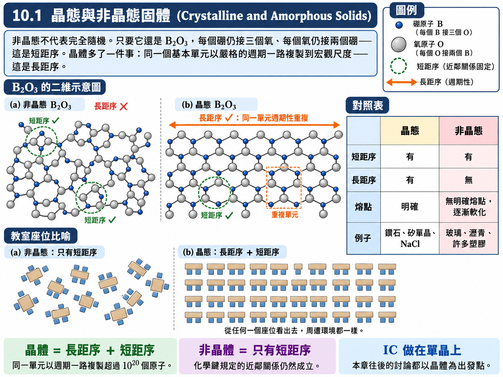
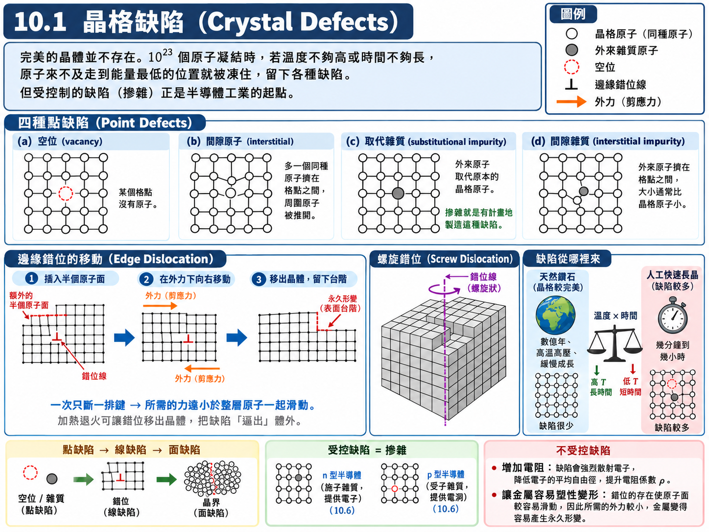
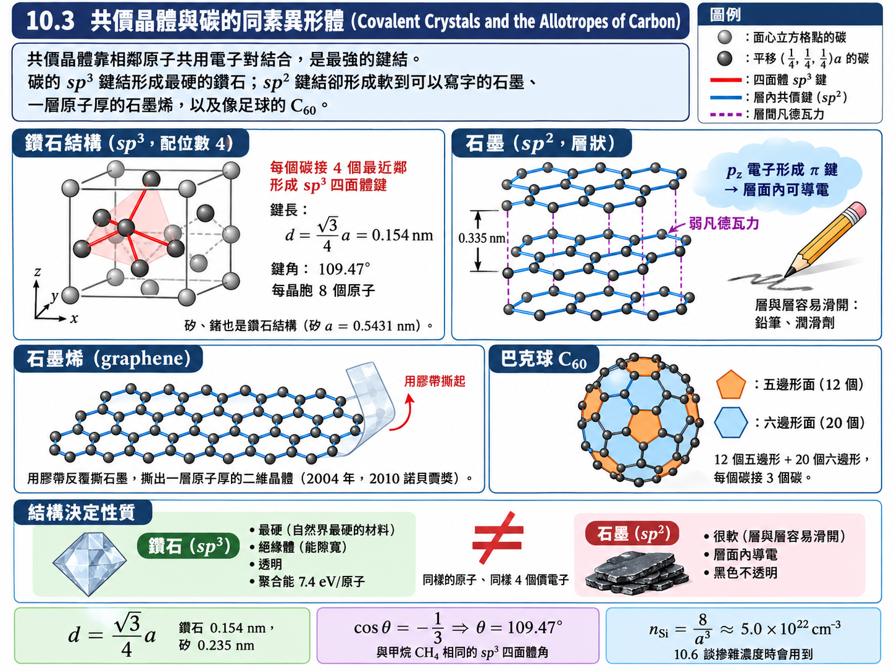
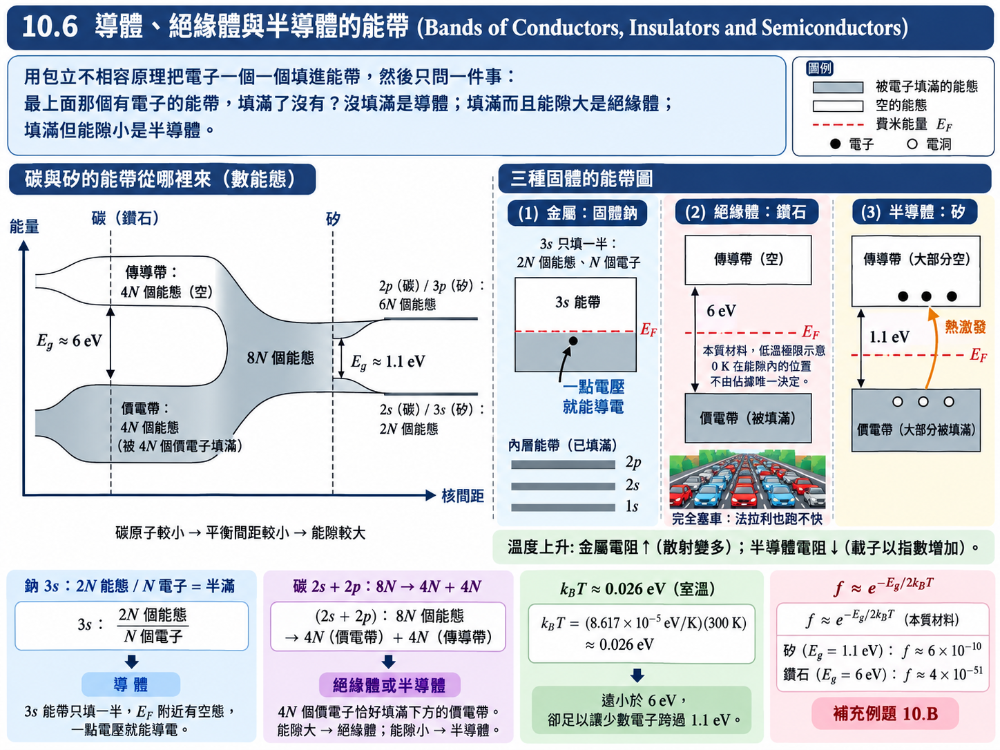

近代物理學 - 固態 (Modern Physics - The Solid State)#
日期: 2026.05.26, 2026.06.02
閱讀與計算約定
【假設】 說明模型及忽略的效應；【已知】 是前章結果、實驗資料或直接引用的定理；【定義】 固定本節的符號。各類編號在節內使用，跨節引用時附節號。
推導保留「列式 → 代入 → 化簡 → 結果」的順序。等號表示在已列假設下成立的關係；近似、數值四捨五入與數量級估算以 \(\approx\) 或 \(\sim\) 區分。
代入前統一單位：\(1\ \mathrm{eV}=1.602176634\times10^{-19}\ \mathrm{J}\)。指數、對數及三角函數的引數須為無因次；結果另檢查量綱、正負號及適用範圍。
本章模型與符號
晶格以理想週期結構為基準；鍵結、輸運與元件分別採用不同近似。10.5 為弱電場、定常弛豫時間模型；10.7 為理想接面模型；10.8 為一維弱週期位能。每一模型的結論均限於該節假設。
符號 |
意義與單位 |
|---|---|
\(e,m,m^*\) |
基本電荷大小 \([\mathrm C]\)、電子質量、有效質量 \([\mathrm{kg}]\) |
\(E,\vec E\) |
能帶段落的 \(E\) 為能量；10.5 的 \(E\) 為電場大小 \([\mathrm{V/m}]\)，依節內定義辨識 |
\(n,N\) |
載子數密度 \([\mathrm{m^{-3}}]\)、粒子或原子總數（無因次） |
\(v_d,v_F,\tau,\lambda\) |
漂移速率、費米速率 \([\mathrm{m/s}]\)；弛豫時間 \([\mathrm s]\)；平均自由徑 \([\mathrm m]\) |
\(k,k_B\) |
波數 \([\mathrm{m^{-1}}]\)、波茲曼常數 \([\mathrm{J/K}]\) |
\(\alpha\) |
10.2 的馬德隆常數無因次；10.4 的極化率有單位，兩者不同 |
\(V_0,V,I_0\) |
接面內建電位、順向為正的外加偏壓 \([\mathrm V]\)；逆向飽和電流 \([\mathrm A]\) |
10.1 晶態與非晶態固體 (Crystalline and Amorphous Solids)#
這是本學期的最後一章。第十一章以後的原子核與基本粒子屬於高能物理，對電機、電子、光電領域較少直接用到；真正與我們最相關、也是所有元件與積體電路 (IC) 賴以建立的物質形態，是固體。前面九章累積的資本——薛丁格方程式、氫原子的能階、分子的鍵結、第九章的量子統計——在這一章要一次用在一個真實而重要的系統上。
固態物理在大學部與研究所通常都要上一整年。這裡不是要講完整的固態物理，而是用近代物理的觀念，去理解固體最重要的幾項性質，尤其是導電。本章的路線如下：
先依結構把固體分成晶態與非晶態（10.1）。
再依鍵結把晶體分成四大類：離子晶體（10.2）、共價晶體（10.3）、以凡德瓦鍵結合的分子晶體（10.4）、金屬（10.5）。前兩類在第八章分子已見過雛形，後兩類則是固體裡才凸顯出來的鍵結。
接著是本章、乃至整個半導體工業最核心的理論——能帶理論（10.6），它回答「為什麼有導體、絕緣體與半導體」。
有了能帶，就能用非常直觀的方式理解二極體、電晶體等半導體元件（10.7）。
最後換一個角度，從自由電子的物質波出發，再推一次能帶的來源（10.8）。
長距序與短距序 (Long-Range and Short-Range Order)#
晶態固體 (crystalline solid) 與非晶態固體 (amorphous solid) 的差別，嚴謹的說法是有沒有長距序 (long-range order)。
長距序表示結構的有序關聯延伸到遠大於原子間距的尺度。本章處理週期晶體：相差晶格平移向量的等價格點具有相同環境，並非從空間任意一點看出去都相同。以下以週期晶格作為能帶計算的模型。
非晶態並不代表完全隨機。例如氧化硼玻璃仍保有局部的硼氧配位單元，但遠處不再呈現週期排列，這就是短距序。碳亦可形成不同晶體與非晶結構；非晶碳可同時含有 \(sp^2\) 與 \(sp^3\) 鍵結，比例依材料與製程而異，不能一概視為失去週期的鑽石。
本章的週期晶體同時具有短距序與長距序，非晶態則缺少週期性長距序。許多玻璃在加熱時經玻璃轉移而逐漸軟化；玻璃是非平衡的非晶固體，不宜僅以「流動極慢的液體」作定義。
由於 IC 晶片幾乎都做在單晶半導體上，本章往後的討論都以晶體為出發點。

晶格缺陷 (Crystal Defects)#
前面描述的是完美的晶體，但實際上沒有任何東西是完美的。圖 10.2 列出四種點缺陷 (point defect)：
(a) 空位 (vacancy)：本該有原子的格點空著。
(b) 間隙原子 (interstitial)：一個本身的原子擠進了格點之間不該有原子的位置。
(c) 取代雜質 (substitutional impurity)：外來原子取代了原本格點上的原子。
(d) 間隙雜質 (interstitial impurity)：外來原子沒有取代誰，而是夾在原子的間隙裡。
直覺上會以為缺陷一定是壞事，其實不然。對金屬而言，缺陷頂多讓導電好一點或差一點；但對半導體而言，只要能精準地控制雜質的種類、數量與位置，就能隨心所欲地調整材料的電性——做成 \(n\) 型、\(p\) 型，再組合成各式各樣的元件（10.6、10.7）。整個半導體工業可以說就是從「操控缺陷」開始的。
缺陷也可能是一整排的，稱為線缺陷 (line defect) 或錯位 (dislocation)。圖 10.3 是邊緣錯位 (edge dislocation)：晶體中多插入了半個原子面，使得上方某一排原子沒有對準下方對應的那一排。錯位是會移動的：施加應力或加熱時，上層原子的鍵結一次只換一排、一步一步往旁邊挪，錯位線就跟著移動，最後被「推」到晶體表面，留下永久的形變。這種一排一排的滑移所需的力，遠比一次推動整層原子小得多，這正是金屬在遠低於理論強度的應力下就能塑性變形的原因。圖 10.4 是另一種錯位——螺旋錯位 (screw dislocation)，原子面繞著錯位線像螺旋梯一樣盤旋上升。此外還有晶界 (grain boundary) 等整個面的缺陷。
為什麼缺陷無法避免？一塊固體有 \(10^{23}\) 量級的原子，從氣體或液體凝結成固體時，每個原子都要「找到」能量最低的位置才能排成完美晶格。這需要足夠高的溫度（讓原子有能力移動）與足夠長的時間（讓它來得及移動）。冷卻太快，原子還沒走到該去的位置就被凍住了，缺陷就此形成。天然鑽石是在地底高溫高壓下經過數億年緩慢形成的，晶格相對完美；人工長晶若要在幾分鐘到幾小時內完成，就很容易產生缺陷。反過來，對已成形的晶體加熱退火 (annealing)，也能讓錯位慢慢移動到表面，把缺陷「逼出」體外。

【物理知識回顧】 晶體與非晶體的分界不在「整不整齊」，而在秩序延伸多遠：非晶體只保有化學鍵所規定的近鄰關係（短距序），晶體則把同一個基本單元以嚴格的週期複製到宏觀尺度（長距序）。這個週期性是本章後半的關鍵——10.8 會看到，正是晶格的週期性讓電子的物質波產生布拉格反射，打開能隙。
缺陷則是這個週期性的「破壞」，它有兩面性：不受控制時它劣化材料（增加電阻、讓金屬變軟），受到控制時它就是調整材料性質最強大的旋鈕——半導體的摻雜就是有計畫地製造取代雜質。
10.2 離子晶體 (Ionic Crystals)#
第八章討論過離子鍵：游離能低的原子（例如 IA 族的鈉）把價電子交給電子親和力高的原子（例如 VIIA 族的氯），形成一正一負兩個離子，靠庫侖吸引力結合。在固體中，同樣的事情發生在 \(10^{23}\) 個離子之間，而且離子會排成一種讓每個離子周圍盡量被異性離子包圍的結構，使異性相吸的作用勝過同性相斥。
氯化鈉與氯化銫的結構#
氯化鈉 (NaCl)（圖 10.5）乍看像是一個簡單立方，其實是面心立方 (face-centered cubic, fcc) 結構：\(\text{Cl}^-\) 佔據一套面心立方格點（立方體的八個角與六個面的中心），\(\text{Na}^+\) 佔據另一套面心立方格點，兩套格點彼此錯開半個晶格常數，交錯穿插在一起。每個 \(\text{Cl}^-\) 的上下左右前後都是 \(\text{Na}^+\)，反之亦然。
每個離子「最近鄰」的異性離子個數稱為配位數 (coordination number)，NaCl 的配位數為 6。
氯化銫 (CsCl)（圖 10.6）則是體心立方 (body-centered cubic, bcc) 型的排列：\(\text{Cl}^-\) 佔據立方體的八個角，\(\text{Cs}^+\) 位於立方體正中央，配位數為 8。（嚴格說，由於角與中心是不同的離子，CsCl 是兩套簡單立方晶格的穿插；課本沿用「體心立方」的說法描述其幾何外觀。）
一個常見的疑問是：既然一個 \(\text{Cs}^+\) 接了 8 個 \(\text{Cl}^-\)，為什麼化學式還是 \(1:1\)？答案是共用：立方體角上的每個 \(\text{Cl}^-\) 同時是周圍 8 個立方體的角，只有 \(\frac{1}{8}\) 屬於這個立方體，故一個立方體內的 \(\text{Cl}^-\) 數為 \(8 \times \frac{1}{8} = 1\)，與中央的 1 個 \(\text{Cs}^+\) 恰好 \(1:1\)。
配位數不只是幾何上的描述，它直接決定了晶體的聚合能 (cohesive energy)——把晶體拆成個別中性原子所需的能量，也就是鍵結的強度。下面就來算它。

假設與已知 (Assumptions & Preliminaries)#
【已知 1】 庫侖位能 (Coulomb potential energy)： 兩個點電荷之間的靜電位能；同號相斥為正，異號相吸為負。
\[U = \frac{q_1 q_2}{4\pi\varepsilon_0 r}\]\(U\) : 位能 (Potential energy)，\([\text{J}]\)
\(q_1, q_2\) : 兩個電荷 (Charges)，\([\text{C}]\)；本節中為 \(\pm e\)
\(r\) : 兩電荷間距 (Separation)，\([\text{m}]\)
\(\varepsilon_0\) : 真空電容率 (Vacuum permittivity)，\([\text{F}\cdot\text{m}^{-1}]\)，\(\varepsilon_0 \approx 8.854 \times 10^{-12} \ \text{F}\cdot\text{m}^{-1}\)
【假設 1】 離子視為點電荷 (Ions as point charges)： \(\text{Na}^+\) 與 \(\text{Cl}^-\) 都是閉殼層 (closed shell) 離子，電荷分布為球對稱。由高斯定律，球對稱電荷分布對外部的作用等同於集中在球心的點電荷；只要兩離子的電子雲不重疊，就可以直接套用【已知 1】。
【已知 2】 氯化鈉結構的鄰居殼層 (Neighbor shells of the NaCl structure)： 以某個 \(\text{Cl}^-\) 為原點、最近鄰距離 \(r\) 為長度單位，NaCl 結構中所有離子都落在整數座標 \(\left( x, y, z \right)r\) 上，且 \(x+y+z\) 為奇數者是 \(\text{Na}^+\)、偶數者是 \(\text{Cl}^-\)。距離平方為 \(j = x^2+y^2+z^2\) 的離子構成第 \(j\) 層殼層。
\[\text{第 } j \text{ 層的距離} = \sqrt{j}\,r, \qquad \text{電荷符號} = \left( -1 \right)^{j} \times \left( \text{原點離子的符號} \right)\]\(j\)
1
2
3
4
5
6
距離
\(r\)
\(\sqrt{2}\,r\)
\(\sqrt{3}\,r\)
\(2r\)
\(\sqrt{5}\,r\)
\(\sqrt{6}\,r\)
離子數 \(N_j\)
6
12
8
6
24
24
種類
異性
同性
異性
同性
異性
同性
\(j\) : 殼層編號，即座標平方和 (Shell index)，\([\text{無單位}]\)
\(N_j\) : 第 \(j\) 層的離子個數 (Number of ions in shell \(j\))，\([\text{無單位}]\)
註：殼層的電荷符號由「\(x^2 \equiv x \pmod 2\)」保證：\(j = x^2+y^2+z^2\) 與 \(x+y+z\) 奇偶相同，故奇數層恆為異性、偶數層恆為同性。\(j = 7\) 沒有任何整數解，所以表中跳過。
【定義 1】 馬德隆常數 (Madelung constant)： 把所有殼層的貢獻整包成一個只與晶格結構有關的無因次數。
\[\alpha \overset{\text{def}}{=} \sum_{j} \left( -1 \right)^{j+1}\frac{N_j}{\sqrt{j}} = 6 - \frac{12}{\sqrt{2}} + \frac{8}{\sqrt{3}} - \frac{6}{2} + \frac{24}{\sqrt{5}} - \cdots\]\(\alpha\) : 馬德隆常數 (Madelung constant)，\([\text{無單位}]\)；NaCl 結構 \(\alpha = 1.748\)，CsCl 結構 \(\alpha = 1.763\)
【假設 2】 包立排斥能 (Repulsive energy from the exclusion principle)： 當兩個離子靠得太近，閉殼層的電子雲開始重疊。依第七章的包立不相容原理，重疊區域內的電子不能擠進同一個量子態，必須被迫佔據能量更高的態，因此能量在 \(r\) 很小時急遽上升。這個效應牽涉到兩邊所有內層電子（\(\text{Na}^+\) 有 10 個、\(\text{Cl}^-\) 有 18 個）的交互作用，從頭計算極為困難，故採用經驗式：
\[U_{\text{repulsive}} = \frac{B}{r^n} \tag{10.2}\]\(U_{\text{repulsive}}\) : 包立排斥能 (Repulsive energy)，\([\text{J}]\)
\(B\) : 排斥強度常數 (Repulsion constant)，\([\text{J}\cdot\text{m}^{n}]\)
\(n\) : 排斥指數 (Repulsion exponent)，\([\text{無單位}]\)；NaCl 約為 \(9\)
註：\(n\) 很大，代表這項排斥在 \(r\) 大時幾乎為零，只在離子非常靠近時才突然變得重要。\(n\) 可由晶體的壓縮率 (compressibility) 實驗決定，\(B\) 則由下面的平衡條件決定。
【已知 3】 平衡條件 (Equilibrium condition)： 穩定平衡的位置是位能的極小值。
\[\left. \frac{dU_{\text{total}}}{dr} \right|_{r = r_0} = 0\]\(r_0\) : 平衡時的最近鄰距離 (Equilibrium separation)，\([\text{m}]\)
【推導 1】 每一離子對的能量 (Energy per ion pair)： 設晶體由 \(N\) 個 \(\text{Na}^+\) 與 \(N\) 個 \(\text{Cl}^-\) 組成。令 \(U_{\text{ion}}\) 為「某一個離子與其他所有離子」的交互作用能。把 \(2N\) 個離子的 \(U_{\text{ion}}\) 全部加起來時，每一對離子都被算了兩次（從 A 看 B 一次、從 B 看 A 一次），必須除以 2：
\[\begin{split}\begin{gather*} U_{\text{crystal}} &=& \frac{1}{2}\left( 2N \right)U_{\text{ion}} \\ &=& N\,U_{\text{ion}} \end{gather*}\end{split}\]\(U_{\text{crystal}}\) : 整塊晶體的總交互作用能 (Total interaction energy)，\([\text{J}]\)
結論：\(U_{\text{ion}}\) 恰好就是「每一個離子對」的能量；若要換算成「每一個原子」，則再除以 2。這一點在例題 10.1 會用到。
推導：馬德隆常數#
以某一個 \(\text{Cl}^-\) 為原點，把【已知 2】的各殼層逐層代入【已知 1】（由【假設 1】，每個離子都是 \(\pm e\) 的點電荷）：
\(U_{\text{coulomb}}\) : 一個離子與其他所有離子的庫侖位能 (Coulomb energy of one ion)，\([\text{J}]\)
\(\alpha\) : 馬德隆常數 (Madelung constant)，NaCl 為 \(1.748\)，\([\text{無單位}]\)
\(r\) : 最近鄰異性離子間距 (Nearest-neighbor distance)，\([\text{m}]\)
第一項 \(U_1 = -\dfrac{6e^2}{4\pi\varepsilon_0 r}\) 是 6 個最近鄰 \(\text{Na}^+\) 的吸引；第二項 \(U_2 = +\dfrac{12e^2}{4\pi\varepsilon_0\sqrt{2}\,r}\) 是 12 個沿面對角線、距離 \(\sqrt{2}\,r\) 的同性 \(\text{Cl}^-\) 的排斥（\(xy\)、\(yz\)、\(zx\) 三個平面各 4 個）。庫侖力和萬有引力一樣是長程力 (long-range force)——\(1/r\) 衰減得很慢，遠處的離子雖然越來越弱，但數量越來越多，不能只算最近鄰就停下來。
\(\alpha\) 只與晶格的幾何排列有關：同樣是 NaCl 結構的晶體（KCl、LiF……）共用同一個 \(\alpha\)，只需算一次。這也是為什麼要先知道晶體是面心立方、體心立方還是其他結構。
【進階探討：這個級數其實很難算】
如果真的照殼層一層一層地加，部分和會是 \(6 \to -2.49 \to 2.13 \to -0.87 \to 9.87 \to 0.07 \to \cdots\)，劇烈振盪、完全看不出收斂到 \(1.748\)。原因是每一層殼層本身都不是電中性的：第 \(j\) 層的離子數 \(N_j\) 隨 \(j\) 增長，而符號交錯，加到哪一層停下來，就等於在外圍留下一大圈淨電荷。
正確的做法是把晶體切成一塊塊電中性的區塊再相加，例如 Evjen 方法：取以原點為中心、邊長 \(2L\) 的立方體，位於立方體表面的離子只算一部分（面上 \(\frac{1}{2}\)、稜上 \(\frac{1}{4}\)、角上 \(\frac{1}{8}\)，其餘部分歸給相鄰的立方體），使每一塊都電中性。這樣算出來 \(L = 1, 2, 3, 6, 10\) 時分別為 \(1.456\)、\(1.752\)、\(1.7470\)、\(1.74760\)、\(1.74757\)，迅速收斂到
這個例子提醒我們：長程力的求和，加總的順序本身就帶有物理意義。
推導：總位能與平衡距離#

總位能是庫侖吸引與包立排斥之和：
圖 10.7 中，\(U_{\text{coulomb}}\) 是一條從負無窮慢慢爬升到零的曲線，\(U_{\text{repulsive}}\) 只在 \(r\) 很小時才陡峭升起；兩者相加得到一個位能谷，谷底的位置就是平衡距離 \(r_0\)，谷底的深度就是 \(U_0\)。
由【已知 3】求谷底：
把 \(B\) 代回 \((10.3)\)，並令 \(r = r_0\)：
\(U_0\) : 平衡時每一離子對的位能 (Potential energy per ion pair at equilibrium)，\([\text{J}]\)，\([\text{eV}]\)
\(r_0\) : 平衡時的最近鄰距離 (Equilibrium separation)，\([\text{m}]\)
註：括號 \(\left( 1 - \frac{1}{n} \right)\) 是包立排斥的修正。\(n \approx 9\) 時只修正約 \(11\%\)——排斥力雖然決定了 \(r_0\) 在哪裡，對總能量的貢獻卻很小，這正是「點電荷模型」能如此成功的原因。
例題 10.1：氯化鈉的聚合能#
題目： 在氯化鈉晶體中，離子平衡時的距離 \(r_0\) 為 \(0.281 \ \text{nm}\)。試計算出氯化鈉的聚合能。
解答：
這一題要分兩段走：先算「離子 → 晶體」放出多少能量，再扣掉「原子 → 離子」需要付出多少能量。
第一段：離子組成晶體。 由 \(\alpha = 1.748\)、\(n \approx 9\)，代入 \((10.5)\)：
由【推導 1】，這是每一個離子對（一個 \(\text{Na}^+\) 加一個 \(\text{Cl}^-\)）的位能；換算成每一個離子，取一半：
第二段：原子變成離子。 聚合能的定義是從中性原子出發，而上面算的是從離子出發。差的是把 Na 原子與 Cl 原子變成 \(\text{Na}^+\) 與 \(\text{Cl}^-\) 所需的能量：
合起來：
此值和實驗值 \(-3.28 \ \text{eV}\) 相去不遠。
【物理知識回顧】 這一題最容易犯的錯誤，是把第一段的 \(-3.98 \ \text{eV}\) 直接當成聚合能。\(-3.98 \ \text{eV}\) 是「把一堆離子湊成晶體」放出的能量；而聚合能問的是「把一堆中性原子湊成晶體」。鈉原子並不會免費變成鈉離子——形成離子要先付 \(0.77 \ \text{eV}\)，晶格再還你 \(3.98 \ \text{eV}\)，淨賺 \(3.21 \ \text{eV}\)。負號代表這個過程放出能量，所以 NaCl 晶體會自發形成。（表 10.1 列出的是聚合能的大小 \(3.28 \ \text{eV/atom}\)，未帶負號。）
只用一個幾何常數 \(\alpha\) 與一個經驗指數 \(n\)，就能把聚合能算到與實驗只差約 \(2\%\)，可見離子晶體的物理本質就是「點電荷的庫侖能 + 一點點包立排斥」。也因為離子鍵很強而且沒有自由電子，離子晶體一般堅硬、熔點高、是絕緣體；但它們可溶於水這類極性液體，溶液中的離子可以移動，所以 NaCl 溶液會導電。
10.3 共價晶體 (Covalent Crystals)#
離子晶體的電子有明確的歸屬：鈉把電子「給」了氯。共價晶體 (covalent crystal) 則是相鄰原子共用電子對，每一條共價鍵就像第八章的 \(\text{H}_2\) 分子鍵，只是延伸到整塊晶體。共價鍵通常具有明顯方向性，許多共價網狀固體也具有很高的鍵結能；不同鍵結類型的強度仍須依材料比較。
鑽石結構 (Diamond Structure)#
最典型的共價晶體是鑽石（圖 10.8）。每個碳原子以 \(sp^3\) 混成軌域與四個碳原子形成共價鍵，四個鄰居位於正四面體的四個頂點，配位數為 4。
把它放到立方晶胞裡看，鑽石結構其實就是一個面心立方，再把每一個面心立方格點沿立方體的體對角線方向 \(\left[ 111 \right]\) 平移 \(\left( \frac{1}{4}, \frac{1}{4}, \frac{1}{4} \right)a\)，放上另一個同樣的碳原子——相當於兩套面心立方錯開四分之一體對角線交錯在一起（與 NaCl 的「兩套面心立方錯開半個晶格」相比，錯開的方向與距離不同，且兩套都是同一種原子）。
鑽石結構不只屬於鑽石。矽 (Si)、鍺 (Ge)——半導體工業最重要的材料——也都是鑽石結構。事實上，大部分的半導體都是共價晶體，而離子晶體則多半是絕緣體。鑽石本身因為能隙太大（10.6）而是絕緣體，算是共價晶體中的例外。
同一種元素，不同的晶體：石墨、石墨烯與巴克球#
即使是同一種原子、同樣的價電子數，也可以形成完全不同的共價晶體，碳是最典型的例子：
石墨 (graphite)（圖 10.9）：每個碳原子只與三個碳原子鍵結（\(sp^2\) 混成），形成六角形網格的平面層；剩下的一個 \(p_z\) 電子垂直於平面，彼此形成遍布整層的 \(\pi\) 鍵，因此石墨在層面內可以導電。層與層之間只靠很弱的凡德瓦力（10.4）維繫，所以石墨很容易沿層面滑開——鉛筆在紙上留下痕跡、石墨可當潤滑劑，都是這個原因。
石墨烯 (graphene)：既然石墨是一層層疊起來的，2004 年 Geim 與 Novoselov 乾脆用膠帶反覆撕石墨，最後撕出只有一層原子厚的二維晶體，並因此獲得 2010 年諾貝爾物理獎。
巴克球 (buckyball)（圖 10.10）：同樣的 \(sp^2\) 鍵結也可以從平面彎成封閉的籠狀結構。\(\text{C}_{60}\) 由 12 個五邊形與 20 個六邊形組成，形狀就像一顆足球；每個碳原子仍與三個碳原子鍵結。
鑽石是已知最硬的天然物質、是絕緣體；石墨卻軟到可以寫字、而且導電。同樣的原子，排列不同，性質就天差地遠——這正是「結構決定性質」最鮮明的例子。

假設與已知 (Assumptions & Preliminaries)#
【定義 1】 鑽石結構 (Diamond structure)： 立方晶胞邊長為 \(a\)。面心立方的四個代表位置為 \(\left( 0,0,0 \right)\)、\(\left( \frac{1}{2},\frac{1}{2},0 \right)\)、\(\left( \frac{1}{2},0,\frac{1}{2} \right)\)、\(\left( 0,\frac{1}{2},\frac{1}{2} \right)\)（以 \(a\) 為單位），每一個位置再平移 \(\left( \frac{1}{4},\frac{1}{4},\frac{1}{4} \right)\) 放一個同種原子。
\[\vec{R}_{\text{第二套}} = \vec{R}_{\text{fcc}} + \left( \frac{1}{4}, \frac{1}{4}, \frac{1}{4} \right)a\]\(a\) : 立方晶格常數 (Cubic lattice constant)，\([\text{m}]\)；鑽石 \(a = 0.3567 \ \text{nm}\)，矽 \(a = 0.5431 \ \text{nm}\)
\(\vec{R}_{\text{fcc}}\) : 面心立方格點位置 (fcc lattice site)，\([\text{m}]\)
【已知 1】 晶胞原子計數法 (Counting atoms in a conventional cell)： 位於晶胞角上的原子被 8 個晶胞共用，只算 \(\frac{1}{8}\)；位於面上的被 2 個晶胞共用，算 \(\frac{1}{2}\)；完全在晶胞內部的算 \(1\)。（10.2 計算 CsCl 的 \(1:1\) 比例時已用過同一個規則。）
【已知 2】 向量夾角 (Angle between two vectors)：
\[\cos\theta = \frac{\vec{u}\cdot\vec{v}}{\left| \vec{u} \right|\left| \vec{v} \right|}\]\(\theta\) : 兩向量夾角 (Angle between the vectors)，\([\text{rad}]\)
推導：原子數、鍵長與鍵角#
(a) 每個立方晶胞的原子數：面心立方部分有 8 個角、6 個面心；第二套原子全部位於晶胞內部，數目與第一套相同。
(b) 最近鄰距離（鍵長）：原點的原子與 \(\left( \frac{1}{4},\frac{1}{4},\frac{1}{4} \right)a\) 的原子之間。
(c) 配位數：從位於 \(\left( \frac{1}{4},\frac{1}{4},\frac{1}{4} \right)a\) 的原子看出去，最近的四個 fcc 格點 \(\left( 0,0,0 \right)\)、\(\left( \frac{1}{2},\frac{1}{2},0 \right)\)、\(\left( \frac{1}{2},0,\frac{1}{2} \right)\)、\(\left( 0,\frac{1}{2},\frac{1}{2} \right)\) 的相對位置為
四者長度都是 \(\frac{\sqrt{3}}{4}a\)，指向正四面體的四個頂點，配位數為 4。
(d) 鍵角：任取兩條鍵，例如 \(\vec{u}_1\) 與 \(\vec{u}_2\)。
這正是第八章甲烷 \(\text{CH}_4\) 的 \(sp^3\) 四面體鍵角——鑽石晶體不過是把 \(sp^3\) 鍵結無限延伸出去。
補充例題 10.A：鑽石與矽的鍵長與原子密度#
題目： 鑽石的晶格常數為 \(a = 0.3567 \ \text{nm}\)，矽為 \(a = 0.5431 \ \text{nm}\)。求兩者的鍵長，以及鑽石的密度、矽的原子數密度。（碳的原子量 \(12.011 \ \text{u}\)，\(1 \ \text{u} = 1.6605 \times 10^{-27} \ \text{kg}\)。）
解答：
由上面推導的 (b)：
鑽石的鍵長 \(0.154 \ \text{nm}\) 正是圖 10.8 標示的數值。由 (a)，每個晶胞有 8 個原子：
【物理知識回顧】 鑽石的密度實驗值為 \(3.51 \ \text{g/cm}^3\)，與純幾何的計算幾乎一致。矽的原子數密度 \(5 \times 10^{22} \ \text{cm}^{-3}\) 請先記住，10.6 談摻雜時會用到：典型的摻雜濃度只有 \(10^{15} \sim 10^{18} \ \text{cm}^{-3}\)，也就是每五萬到每五千萬個矽原子才換掉一個——這就是課本說的「痕量」雜質。
另外值得注意的是，鑽石結構的鍵很強，但原子排得其實很鬆：每個原子只有 4 個鄰居（面心立方金屬有 12 個），若把原子當成剛好相切的硬球，鑽石結構只填滿了約 \(34\%\) 的空間（面心立方為 \(74\%\)）。這種「強而開放」的結構，下一節在冰的身上還會再看到一次。
10.4 凡德瓦鍵 (Van der Waals Bond)#
前三種鍵都需要電子轉移或共用。但有一大類分子——水、甲烷、有機分子、甚至惰性氣體——在固態時，分子本身完好無缺，分子與分子之間只靠一種很弱、但到處都有的吸引力結合，稱為凡德瓦力 (van der Waals force)，所形成的固體稱為分子晶體 (molecular crystal)。
三種凡德瓦吸引#
凡德瓦力的本質仍然是庫侖力，只是作用的對象不是淨電荷，而是電偶極 (electric dipole)：
極性分子之間（圖 10.11）：水分子中氧原子吸電子較強，氫的一端看似帶正電、氧的一端看似帶負電，可以簡化成一根「一端正、一端負」的小棒子。在液體或氣體中，這些小棒子會正對負、負對正地排成三角形、長鏈或並排等各種組合。
極性分子吸引可極化分子（圖 10.12）：一個原本沒有極性的分子，當極性分子靠近時，極性分子的電場把它的正電荷往一邊推、負電荷往另一邊拉，於是它被感應 (induce) 出一個偶極，再被極性分子吸引。水能溶解許多物質，部分就是靠這種機制：水分子的偶極去極化溶質分子，與它的正、負電區互相吸引，把它拆散到溶液中。
非極性分子之間（圖 10.13）：即使兩個分子都沒有永久偶極，它們的電荷分布平均是對稱的，但在任一瞬間卻未必對稱。某一瞬間的漲落偶極會感應鄰近分子產生同步的偶極，兩者於是互相吸引。這種吸引存在於所有原子、分子之間，因此凡德瓦力「到處都有」。
在遠距離、非遲滯近似下，誘導與色散作用常給出 \(U\propto-r^{-6}\)、徑向力 \(\propto-r^{-7}\)。兩個固定取向的永久偶極則有 \(r^{-3}\) 位能；取向的熱平均需另處理。下面只推導「永久偶極—感應偶極」這一種情形。

假設與已知 (Assumptions & Preliminaries)#
【已知 1】 電偶極的電位 (Potential of an electric dipole)： 古典靜電學結論，適用於距離遠大於偶極本身尺寸之處。
\[\phi\left( \vec{r} \right) = \frac{1}{4\pi\varepsilon_0}\frac{\vec{p}\cdot\vec{r}}{r^3}\]\(\phi\) : 電位 (Electric potential)，\([\text{V}]\)
\(\vec{p}\) : 極性分子的電偶極矩 (Electric dipole moment)，\([\text{C}\cdot\text{m}]\)
\(\vec{r}\) : 由偶極指向場點的位置向量 (Position vector from the dipole)，\([\text{m}]\)，\(r = \left| \vec{r} \right|\)
【已知 2】 電場與電位 (Field from potential)：
\[\vec{E} = -\nabla\phi\]\(\vec{E}\) : 電場 (Electric field)，\([\text{V}\cdot\text{m}^{-1}]\)
【已知 3】 兩個梯度公式 (Two gradient identities)： \(\vec{p}\) 為常向量。
\[\begin{split}\begin{gather*} \nabla\left( \vec{p}\cdot\vec{r} \right) &=& \vec{p} \\ \nabla\left( r^{-3} \right) &=& -3\frac{\vec{r}}{r^{5}} \end{gather*}\end{split}\]【假設 1】 線性極化 (Linear polarizability)： 可極化分子在電場中產生的感應偶極矩與電場成正比。
\[\vec{p}\,' = \alpha\vec{E} \tag{10.7}\]\(\vec{p}\,'\) : 感應偶極矩 (Induced dipole moment)，\([\text{C}\cdot\text{m}]\)
\(\alpha\) : 極化率 (Polarizability)，\([\text{C}\cdot\text{m}^2\cdot\text{V}^{-1}]\)
註：此處的 \(\alpha\) 沿用課本記號，與 10.2 的馬德隆常數毫無關係。
【已知 4】 線性感應偶極的能量 (Energy of an induced dipole)： 固定的永久偶極在外場中的能量為 \(-\vec p\cdot\vec E\)；此處 \(\vec p\,'=\alpha\vec E\) 是隨外場建立的感應偶極，須將極化的代價計入：
\[U=-\int_0^E p'(E')\,dE' =-\int_0^E\alpha E'\,dE' =-\frac12\alpha E^2 =-\frac12\vec p\,'\cdot\vec E.\]假設極化率為正、各向同性且在此場強範圍為常數，忽略短程電子雲重疊及遲滯效應。
【定義 1】 夾角 \(\theta\)： \(\vec{p}\) 與 \(\vec{r}\) 之間的夾角。
\[\vec{p}\cdot\vec{r} \overset{\text{def}}{=} p\,r\cos\theta\]
推導：偶極電場#
註：投影片上的 \((10.6)\) 寫成 \(\frac{1}{4\pi\varepsilon_0}\left[ \frac{\vec{p}}{r^3} - \frac{3\left( \vec{p}\cdot\vec{r} \right)\vec{r}}{r^5} \right]\)，與上式差一個整體負號；正確的方向如上（例如在偶極軸上 \(\theta = 0\)，電場應與 \(\vec{p}\) 同向）。由於下面只用到 \(\vec{E}\cdot\vec{E}\)，這個負號不影響 \((10.8)\)。
雖然分母出現 \(r^5\)，但分子還有 \(\vec{r}\) 帶來的一次方，所以偶極電場的大小正比於 \(1/r^3\)——比點電荷的 \(1/r^2\) 衰減得更快，因為正負電荷的電場在遠處幾乎互相抵消。
係數約定： 以下把建立感應偶極的能量納入，因此 \((10.8)\) 及其導出的力含有 \(1/2\) 修正；距離的冪次不變。原圖或投影片若省略該係數，不應直接用於定量代入。
推導：交互作用能#
把 \((10.6)\) 與 \((10.7)\) 代入【已知 4】：
先把 \(\vec{E}\cdot\vec{E}\) 展開成四項，再用【定義 1】把所有內積換成 \(\cos\theta\)：
\(U\) : 極性分子與可極化分子之間的交互作用能 (Interaction energy)，\([\text{J}]\)
\(\theta\) : \(\vec{p}\) 與連心線的夾角 (Angle between \(\vec{p}\) and \(\vec{r}\))，\([\text{rad}]\)
註：因 \(\alpha>0\) 且 \(1+3\cos^2\theta>0\)，此感應作用的能量為負、徑向力為吸引；這不是所有偶極取向或短程總作用都吸引的通則。
固定 \(\theta\) 對 \(r\) 微分，得到徑向力分量 \(F\)（向外為正）；其負號表示吸引：
（負號代表力指向 \(r\) 減少的方向，即吸引。）
為什麼凡德瓦鍵這麼弱？ 把幾種靜電交互作用的 \(r\) 依賴關係排在一起：
交互作用 |
位能正比於 |
距離加倍時位能變為 |
|---|---|---|
離子–離子（點電荷） |
\(1/r\) |
\(1/2\) |
固定偶極–偶極 |
\(1/r^3\) |
\(1/8\) |
偶極–感應偶極（凡德瓦） |
\(1/r^6\) |
\(1/64\) |
\(1/r^6\) 來自兩次 \(1/r^3\)：第一次是偶極電場本身的衰減，第二次是感應偶極的大小又正比於那個電場。距離稍微拉開，凡德瓦能量就急遽下降。
【進階探討：凡德瓦固體的位能曲線——Lennard-Jones 位能】
\((10.8)\) 只描述了吸引。就像 10.2 的離子晶體一樣，分子靠得太近時電子雲重疊，包立不相容原理會產生急遽上升的排斥。若把排斥寫成 \(B/r^{n}\) 並取 \(n = 12\)（純粹為了數學方便），就得到描述惰性氣體固體最常用的 Lennard-Jones 位能：
\(\epsilon\) : 位能谷的深度 (Well depth)，\([\text{J}]\)
\(\sigma\) : 位能為零處的距離 (Zero-crossing distance)，\([\text{m}]\)
仿照 10.2 求谷底：
以氬為例，\(\epsilon \approx 0.010 \ \text{eV}\)、\(\sigma \approx 0.34 \ \text{nm}\)。一對氬原子的結合能約 \(0.01 \ \text{eV}\)，而一對 \(\text{Na}^+\)–\(\text{Cl}^-\) 是 \(7.96 \ \text{eV}\)，相差近千倍——這就是為什麼固態氬只能存在於 \(84 \ \text{K}\) 以下。
氫鍵與冰 (Hydrogen Bonds and Ice)#
水分子是凡德瓦鍵中特別強的一種，稱為氫鍵 (hydrogen bond)。氧原子周圍有四對價電子（氧本身提供 6 個、兩個氫各提供 1 個），佔據四個區域、形成四面體（圖 10.14）：其中兩對與氫共用，另外兩對沒有接任何原子，形成兩個「高電子機率區」。每個水分子的兩個氫可以吸引其他水分子的這種負電區，自己的兩個負電區又可以吸引其他水分子的氫，所以每個水分子可以和四個水分子形成氫鍵。
在液態水中，分子不斷轉動，氫鍵時斷時續，排列較無秩序。一旦凝結成冰，四面體的方向被固定下來，水分子排成開放的六角形結構（圖 10.15），中間留下許多空隙——氧原子那兩對沒接原子的電子佔掉了空間，卻沒有原子在那裡。結果冰的密度比液態水小，冰會浮在水面上。
絕大多數物質的固態都比液態緊密，水是少數的例外。有趣的是，另外幾個例外——矽、鍺、鎵、鉍——也多半具有四面體式的開放結構：矽在 10.3 已經看到，它的鑽石結構只填滿了約 \(34\%\) 的空間。
表 10.1 晶態固體的種類#
聚合能表示將一個原子（或分子）從晶體中搬移所需做的功，也就是將原子固定的鍵結強度。
種類 |
離子 |
共價 |
分子 |
金屬 |
|---|---|---|---|---|
晶格單元 |
正、負離子交錯 |
原子之間共用電子 |
分子（電荷瞬間分離） |
金屬正離子浸在電子氣中 |
鍵結 |
電吸引 |
共用電子 |
凡德瓦力 |
電子氣 |
特性 |
堅硬；高熔點；可溶於如水的極性液體；絕緣體（但在溶液中為導體） |
非常堅硬；高熔點；幾乎不溶於任何液體；半導體（除了鑽石為絕緣體） |
軟；低熔點、低沸點；可溶於共價液體；絕緣體 |
延展性；金屬光澤；高導電性與導熱性 |
例子 |
氯化鈉 NaCl，\(E_{\text{cohesive}} = 3.28 \ \text{eV/atom}\) |
鑽石 C，\(E_{\text{cohesive}} = 7.4 \ \text{eV/atom}\) |
甲烷 \(\text{CH}_4\)，\(E_{\text{cohesive}} = 0.1 \ \text{eV/molecule}\) |
鈉 Na，\(E_{\text{cohesive}} = 1.1 \ \text{eV/atom}\) |
【物理知識回顧】 到這裡已經介紹了三種晶體：以 NaCl 為代表的離子晶體、以鑽石為代表的共價晶體、以冰和甲烷為代表的分子晶體。聚合能的排序 \(7.4 > 3.28 > 0.1 \ \text{eV}\) 直接對應到硬度的排序：共價鍵最強（鑽石最硬）、離子鍵次之、凡德瓦鍵最弱（分子晶體最軟、最容易熔化）。
四種鍵結追根究柢都是庫侖力；差別只在「誰跟誰」作用——淨電荷對淨電荷 \(\left( 1/r \right)\)、共用電子對、偶極對偶極 \(\left( 1/r^6 \right)\)。而凡德瓦力雖然最弱，卻是唯一「到處都有」的：石墨的層與層之間、蛋白質的摺疊、壁虎腳掌吸附牆面，都有它的身影。
10.5 金屬鍵 (Metallic Bond)#
離子鍵、共價鍵、凡德瓦鍵有一個共同點：電子都有明確的歸屬，不是屬於某一個原子，就是屬於某兩個原子之間的那條鍵。金屬鍵完全不同。金、銀、銅、鐵這些金屬原子各自貢獻出價電子，這些電子不屬於任何一個原子，而是在整塊金屬中自由遊走，形成一片電子海 (electron sea)，也就是第九章處理過的自由電子氣 (free electron gas)。帶負電的電子海像膠水一樣，透過庫侖吸引把帶正電的金屬離子黏在一起。
因為沒有固定的鍵，離子與離子之間的距離很容易改變，所以金屬容易彎曲、可以拉長——這就是延展性 (ductility) 與展性 (malleability)。離子晶體與共價晶體則不同：它們的鍵長是固定的，施力不夠時紋風不動，施力太大就直接斷裂。（10.1 的錯位滑移在金屬中特別容易發生，也是同一件事的另一面。）
自由電子氣也決定了金屬其他的招牌性質：高導電性、高導熱性，以及金屬光澤（自由電子能吸收並重新放出各種頻率的可見光）。本節聚焦在導電。
從巨觀的歐姆定律到微觀的電子碰撞#
國中就學過的歐姆定律 (Ohm’s law) 是一條巨觀的實驗定律：對金屬加電壓、量電流，發現兩者成正比，而比例常數就定義了電阻。這和牛頓第二定律的角色很像——\(F = ma\) 中，力與加速度的比值定義了質量；\(V = IR\) 中，電壓與電流的比值定義了電阻。
\(I\) : 電流 (Current)，\([\text{A}]\)
\(V\) : 電壓 (Voltage)，\([\text{V}]\)
\(R\) : 電阻 (Resistance)，\([\Omega]\)
但歐姆定律只告訴我們「是什麼」，沒有告訴我們「為什麼」。為什麼電流與電壓會成正比？電阻在微觀上到底是什麼？為什麼電阻會發熱？ 學了那麼多量子力學與統計力學，現在要回答這些問題。
答案的核心是碰撞。電子在電場中加速，走一段距離就撞上晶格離子（偶爾撞上雜質或其他電子），把剛從電場得到的能量交給晶格。一顆電子每次碰撞損失一點點能量，\(10^{22}\) 顆電子不斷碰撞，巨觀上就是電阻所發的焦耳熱，功率 \(P = IV\)。
把巨觀的現象（I–V 曲線）與微觀的電子、光子、電磁場如何交互作用連結起來——這正是所有固態物理、半導體物理在做的事。唯有建立這樣的連結，歐姆定律才不只是一條實驗定律：我們才能預測什麼樣的金屬導電比較好、溫度升高時電阻會上升還是下降。
假設與已知 (Assumptions & Preliminaries)#
【已知 1】 金屬中的自由電子 (Free electrons in a metal)： 由費米–狄拉克分布，\(T \approx 0\) 時電子從最低能態一路填到費米能量 \(E_F\)。費米能量以下的態全被佔滿，電場無法把那些電子推進已被佔據的態，因此只有費米能量附近的電子能參與導電；它們的速率是費米速率 \(v_F\)。（1s、2s 這類內層電子更不可能導電。）
\[E_F = \frac{1}{2}m v_F^2\]\(E_F\) : 費米能量 (Fermi energy)，\([\text{J}]\)，\([\text{eV}]\)；課本記作 \(\epsilon_F\)，銅為 \(7.04 \ \text{eV}\)
\(v_F\) : 費米速率 (Fermi speed)，\([\text{m}\cdot\text{s}^{-1}]\)；銅為 \(1.57 \times 10^{6} \ \text{m/s}\)
\(m\) : 電子質量 (Electron mass)，\([\text{kg}]\)
【定義 1】 平均自由徑與碰撞時間 (Mean free path and collision time)： 電子在兩次碰撞之間平均走過的距離稱為平均自由徑 \(\lambda\)——在這段路徑內電子不受碰撞，像在真空中一樣自由。走完這段距離所需的平均時間稱為碰撞時間 \(\tau\)。由於導電電子以 \(v_F\) 的速率亂跑：
\[\tau = \frac{\lambda}{v_F} \tag{10.10}\]\(\lambda\) : 平均自由徑 (Mean free path)，\([\text{m}]\)
\(\tau\) : 碰撞時間 (Collision time)，\([\text{s}]\)
【假設 1】 定常弛豫時間近似 (Steady-state relaxation-time approximation)： 弱且均勻的電場下，以常數 \(\tau\) 描述平均動量的鬆弛，忽略電場造成的明顯加熱。平衡時隨機速度的向量平均為零；散射使偏離平衡的平均速度以速率 \(1/\tau\) 衰減。
\[\left\langle \vec{v}_{\text{random}} \right\rangle = 0\]\(\vec{v}_{\text{random}}\) : 電子的隨機速度 (Random velocity)，大小約為 \(v_F\)，\([\text{m}\cdot\text{s}^{-1}]\)
【已知 2】 牛頓第二定律與電力 (Newton’s second law with the electric force)： 電場 \(E\) 對電荷 \(e\) 的作用力為 \(F = eE\)（只看大小；電子實際上逆著電場方向加速）。
\[a = \frac{F}{m} = \frac{eE}{m} \tag{10.11}\]\(a\) : 電子在兩次碰撞之間的加速度 (Acceleration between collisions)，\([\text{m}\cdot\text{s}^{-2}]\)
\(E\) : 導線內的電場 (Electric field in the wire)，\([\text{V}\cdot\text{m}^{-1}]\)；本節的 \(E\) 指電場，不是能量
\(e\) : 基本電荷 (Elementary charge)，\([\text{C}]\)
【已知 3】 均勻導線中的電場 (Uniform field in a wire)： 長度 \(L\) 的均勻導線兩端加電壓 \(V\)。
\[E = \frac{V}{L}\]\(L\) : 導線長度 (Wire length)，\([\text{m}]\)
【推導 1】 電流與漂移速度的關係 (Current and drift velocity)： 見圖 10.16。設導線截面積 \(A\)、單位體積內有 \(n\) 個自由電子，且電子沿導線集體以漂移速度 \(v_d\) 前進。經過時間 \(t\)，所有位在截面前方、長度 \(v_d t\) 的圓柱體內的電子，都會穿過這個截面：
\[\begin{split}\begin{gather*} N_{\text{通過}} &=& n\left( A v_d t \right) \\ Q &=& N_{\text{通過}}\,e = nAe v_d t \\ I &=& \frac{Q}{t} = nAe v_d \end{gather*}\end{split}\]\[I = nAe v_d \tag{10.13}\]\(n\) : 自由電子數密度 (Free-electron density)，\([\text{m}^{-3}]\)
\(A\) : 導線截面積 (Cross-sectional area)，\([\text{m}^2]\)
\(v_d\) : 漂移速度 (Drift velocity)，\([\text{m}\cdot\text{s}^{-1}]\)
\(Q\) : 時間 \(t\) 內通過截面的電荷 (Charge passing in time \(t\))，\([\text{C}]\)

推導：漂移速度#
由【假設 1】，平均漂移速度的向量方程為
取定常條件 \(d\vec v_d/dt=0\)，先求方向，再取大小：
因此下列 \(v_d\) 是速率大小，不是每次固定飛行時間結束時的末速度；\(\lambda=v_F\tau\) 則以費米速率估算平均自由徑：
你可能會問：電子本來就有 \(v_F\)，總速度不是應該 \(v_F + v_d\) 嗎？原則上沒錯，但 \(v_F\) 的方向是隨機的，對所有電子平均後為零，不貢獻電流；只有 \(v_d\) 是所有電子共同朝同一方向的部分，才構成電流。實際的電子軌跡是圖 10.17 那種曲折的亂跑，只是整體緩緩地朝電場的反方向（電子帶負電）漂移。
例題 10.2：銅導線中的漂移速度#
題目： 試計算 \(1.0 \ \text{A}\) 的電流在截面積 \(A = 1.0 \ \text{mm}^2\) 的銅導線中傳導時，自由電子的漂移速度 \(v_d\)。假設每個銅原子提供一個電子給電子氣。
解答：
由【推導 1】的 \((10.13)\) 解出 \(v_d\)：
銅每個原子貢獻一個電子，故自由電子密度等於銅的原子數密度（第九章已算過）\(n = 8.5 \times 10^{28} \ \text{m}^{-3}\)。代入：
（投影片上印成 \(7.4 \times 10^{-4} \ \text{m/s}\)，指數有誤；分母 \(8.5 \times 1.0 \times 1.6 \times 10^{28-6-19} = 1.36 \times 10^{4}\)，答案應為 \(10^{-5}\) 量級。）
【物理知識回顧】 即使是 \(1 \ \text{A}\) 這麼大的電流，電子的漂移速度也只有每秒 \(0.07 \ \text{mm}\)，走完 \(1 \ \text{m}\) 的導線要將近 4 個小時。那為什麼開關一按，燈立刻就亮？
因為電流的建立不需要等電子從導線一端走到另一端。開關接通的瞬間，電場以電磁波的速度（接近光速，第二章）沿導線建立起來；電場一到，每一個截面附近的電子都立刻開始漂移，電流也就立刻出現在每一個截面上。漂移速度是電子本身的速度，訊號速度是電場建立的速度，兩者是完全不同的概念。
推導：電阻與電阻係數#
有了 \(v_d\) 與 \(I\) 的關係，就能把微觀的電子運動與巨觀的歐姆定律接起來。把 \((10.12)\) 代入 \((10.13)\)，再用【已知 3】把電場換成電壓：
電流確實正比於電壓——歐姆定律從電子的運動中自然地推導出來了。比較 \((10.9)\) 與 \((10.14)\)：
括號外的 \(L/A\) 只與導線的幾何形狀有關；括號內的量——\(m\)、\(v_F\)（由 \(E_F\) 決定）、\(n\)、\(e\)、\(\lambda\)——只與材料本身有關。銅有銅的值，銀有銀的值。於是把括號內的部分單獨定義為電阻係數 (resistivity)：
\(\rho\) : 電阻係數 (Resistivity)，\([\Omega\cdot\text{m}]\)
於是 \(R = \rho L/A\)：導線越長電阻越大，截面越寬電阻越小——這是國高中就背過的公式，但現在我們知道 \(\rho\) 裡面裝的是什麼。
例題 10.3：銅中自由電子的平均自由徑#
題目： 在 \(20^{\circ}\text{C}\) 時，銅的電阻係數為 \(\rho = 1.72 \times 10^{-8} \ \Omega\cdot\text{m}\)，試計算銅在 \(20^{\circ}\text{C}\) 時，自由電子碰撞的平均自由徑 \(\lambda\)。
解答：
由第九章，銅的自由電子密度 \(n = 8.48 \times 10^{28} \ \text{m}^{-3}\)；由【已知 1】，\(E_F = 7.04 \ \text{eV}\) 對應的費米速率為
把 \((10.16)\) 解出 \(\lambda\)：
固態銅內的離子距離為 \(0.26 \ \text{nm}\)，所以平均來說，自由電子在散射之前會通過大約 \(38.3/0.26 \approx 150\) 個離子。
驗算（與例題 10.2 互相印證）： 例題 10.2 的電流密度 \(J = I/A = 10^{6} \ \text{A/m}^2\)，對應的電場 \(E = \rho J = 0.0172 \ \text{V/m}\)。代入 \((10.12)\)：
與例題 10.2 用 \(I = nAev_d\) 算出的結果完全一致——這也再次確認正確答案是 \(10^{-5}\) 量級。碰撞時間則為 \(\tau = \lambda/v_F \approx 2.4 \times 10^{-14} \ \text{s}\)。
【物理知識回顧】 \(38 \ \text{nm}\) 對電子而言是很長的距離：它要穿過約 150 個離子才碰撞一次。這正是銅導電性極佳的原因——在所有金屬中，銅的電阻係數僅次於銀，甚至比金還低。
但這個數字其實是個謎：銅離子排得那麼密，電子怎麼能「穿過」150 個離子都不撞到？古典的彈珠圖像無法解釋。答案要等到 10.8：電子是物質波，一個完美週期排列的晶格根本不會散射電子波；真正會散射電子的，是破壞週期性的東西——晶格的熱振動，以及雜質與缺陷。
電阻與溫度、雜質的關係#
依上面的觀點，就能理解電阻係數隨溫度的變化（圖 10.18）：
室溫附近：溫度越高，離子的熱振動越劇烈，晶格偏離完美週期的程度越大，電子越容易被散射，\(\lambda\) 變短，由 \((10.16)\) 電阻係數上升，而且大致與溫度成線性關係。（注意 \(v_F\) 由費米能量決定，幾乎與溫度無關；溫度改變的主要是 \(\lambda\)。）
接近絕對零度：熱振動幾乎凍結，電阻卻不會降到零，而是停在一個與溫度無關的殘餘電阻 (residual resistivity)。這部分來自雜質與缺陷的散射，雜質越多，殘餘電阻越高——圖 10.18 上方曲線的樣本雜質濃度較高。
兩種散射機制各自獨立，電阻係數近似為兩者之和（Matthiessen 規則）：
\(\rho_{\text{thermal}}\left( T \right)\) : 晶格熱振動造成的電阻係數，隨溫度上升，\([\Omega\cdot\text{m}]\)
\(\rho_{\text{impurity}}\) : 雜質與缺陷造成的殘餘電阻係數，與溫度無關，\([\Omega\cdot\text{m}]\)
這個關係在實務上非常有用：做一次變溫電阻量測，從低溫區的殘餘電阻就可以反推材料中雜質的多寡。這在半導體製程中是很常見的檢測手段。
【進階探討：當導線細到比平均自由徑還小】
\((10.16)\) 說電阻係數是材料性質，與導線大小無關。這個說法隱含了一個假設：導線的長、寬、高都遠大於平均自由徑，電子在撞到導線邊界之前，早就被晶格散射過很多次了。
現代 IC 晶片內部用銅導線連接各個元件。當製程進到 7 nm、5 nm 世代，最細的金屬導線線寬已經只有一、二十奈米，比銅的 \(\lambda \approx 38 \ \text{nm}\) 還小。電子還沒來得及被晶格散射，就先撞上了導線的側壁與晶界；有效的平均自由徑被導線尺寸所限制，電阻係數因此明顯高於塊材 (bulk) 的值。這是先進製程中「導線電阻」成為效能瓶頸的原因之一，也是業界開始評估鈷 (Co)、釕 (Ru) 等平均自由徑較短、受尺寸影響較小的替代金屬的理由。
只有真正理解電阻在微觀世界裡是怎麼來的，才看得出這種問題。
10.6 固體的能帶理論 (Band Theory of Solids)#
固體導電能力的差距大得驚人：銀的電阻係數約 \(10^{-8} \ \Omega\cdot\text{m}\)，而鑽石、石英這類絕緣體可以高達 \(10^{12} \sim 10^{16} \ \Omega\cdot\text{m}\)，相差超過二十個數量級。自然界幾乎沒有其他物理量有這麼大的變化範圍。是什麼決定了一塊固體是導體 (conductor)、絕緣體 (insulator) 還是半導體 (semiconductor)？
答案是固體的能帶結構 (band structure)。對學電機、電子的人而言，這一節（以及下一節）大概是整門近代物理中與實際應用最直接相關的部分。
從能階到能帶 (From Energy Levels to Energy Bands)#
回想第八章的氫分子。兩個氫原子相距很遠時沒有交互作用，各自的電子能量都是 \(-13.6 \ \text{eV}\)。把它們拉近，兩個 \(1s\) 波函數開始重疊，組合成對稱 (symmetric) 與反對稱 (antisymmetric) 兩種波函數，原本相同的一個能量就分裂成兩條能階。
如果不是兩個、而是五個原子靠在一起，同樣的事情會發生：五個原子各自的波函數有五種組合方式，原本相同的能量分裂成五條——有的電子多得了一點能量，有的少了一點（圖 10.19）。
一塊固體有 \(10^{22} \sim 10^{23}\) 個原子。原本相同的一條原子能階，會分裂成 \(10^{23}\) 條；而這些能階全部擠在幾個 eV 的範圍內，間距小到 \(10^{-23} \ \text{eV}\) 的量級，人類的任何儀器都無法分辨，實質上就是連續的。這一團準連續的能階稱為能帶 (energy band)。
能階 (energy level) 是離散的：氫原子 \(-13.6 \ \text{eV}\) 的下一條是 \(-3.4 \ \text{eV}\)，中間沒有東西。
能帶 (energy band) 是連續的：許多原子聚在一起，彼此影響，使原本相同的能量展開成一整片。
圖 10.20 以鈉為例，橫軸是原子核間距、縱軸是能量。原子間距大時，每條能階都是一條細線；間距縮小時，最外層的能階最先展開，因為外層軌域最大、最早與鄰居重疊。在鈉的實際原子間距 \(0.367 \ \text{nm}\)（圖中的虛線）處，\(1s\)、\(2s\)、\(2p\) 這些內層能階仍然幾乎是細線（內層電子根本感覺不到鄰居），\(3s\) 則已展開成寬闊的能帶，更上面的 \(3p\)、\(4s\)、\(3d\) 甚至彼此重疊在一起。
於是，從實際原子間距那條虛線往上讀，能帶之間可能有兩種關係（圖 10.21）：
(a) 重疊：相鄰能帶交疊，形成一整片連續的能帶。
(b) 不重疊：兩個能帶之間留下一段沒有任何允許能態的空白，稱為禁止帶 (forbidden band) 或能隙 (energy gap)，電子不能具有那段範圍內的能量。
能帶怎麼展開、何時重疊、有沒有能隙，取決於原子的種類與最後的平衡間距——這些都可以由解薛丁格方程式得到，就像當初解氫原子與氫分子一樣。

假設與已知 (Assumptions & Preliminaries)#
【已知 1】 電子共享與能階分裂 (Electron sharing and level splitting)： 兩個相同原子靠近時，兩個原子軌域組合成對稱與反對稱兩種分子軌域，一條原子能階分裂成兩條。
\[\psi_S \propto \psi^{(a)} + \psi^{(b)}, \qquad \psi_A \propto \psi^{(a)} - \psi^{(b)}, \qquad E_S < E_{\text{atom}} < E_A\]\(\psi^{(a)}, \psi^{(b)}\) : 兩個原子各自的原子軌域 (Atomic orbitals)
\(\psi_S, \psi_A\) : 對稱與反對稱的組合 (Symmetric and antisymmetric combinations)
\(E_{\text{atom}}\) : 孤立原子的能階 (Isolated-atom level)，\([\text{eV}]\)
【假設 1】 每原子一個基底軌域 (One basis orbital per atom)： 先取每個原子的一個空間軌域，共 \(N\) 個線性獨立基底，形成 \(N\) 個單電子空間態，暫不計自旋。若每原子納入 \(q\) 個軌域，則共有 \(qN\) 個空間態。大晶體在固定晶格間距及耦合下，帶寬 \(W\) 趨近塊材值，態間距則隨 \(N\) 增大而縮小。
\[\text{一條原子能階} \ \xrightarrow{\ N \text{ 個原子}\ } \ N \text{ 條能階，展開於寬度 } W \text{ 之內}\]\(N\) : 晶體中的原子數 (Number of atoms)，\([\text{無單位}]\)，約 \(10^{22} \sim 10^{23}\)
\(W\) : 能帶寬度 (Band width)，\([\text{eV}]\)，約數個 eV
【已知 2】 包立不相容原理 (Pauli exclusion principle)： 第七章的結論——每一個空間量子態最多只能容納自旋相反的兩個電子。
【已知 3】 原子軌域的個數 (Number of orbitals in a subshell)： 由第六章，給定 \(l\)，磁量子數 \(m_l\) 有 \(2l+1\) 個值，即有 \(2l+1\) 個軌域。
\[s \left( l = 0 \right): 1 \text{ 個軌域}, \qquad p \left( l = 1 \right): 3 \text{ 個軌域}\]【已知 4】 費米能量 (Fermi energy)： 第九章的結論——在 \(T = 0\) 時，電子遵守費米–狄拉克分布，從最低的能態一路往上填；被佔據的最高能量即為費米能量 \(E_F\)。
\(E_F\) : 費米能量 (Fermi energy)，\([\text{eV}]\)；課本記作 \(\epsilon_F\)
推導：能帶為什麼是「連續」的#
由【假設 1】，\(N\) 條能階擠在寬度 \(W\) 之內，平均間距為
室溫的熱能 \(k_B T \approx 0.026 \ \text{eV}\)（\(k_B\) 為波茲曼常數，見補充例題 10.B 的符號說明）比這個間距大了二十個數量級，任何微弱的擾動都足以讓電子在相鄰能階間移動，所以能帶在實用上就是連續的。
推導：數能態——為什麼鈉是金屬#
鈉的電子組態是 \(1s^2 2s^2 2p^6 3s^1\)。內層的 \(1s\)、\(2s\)、\(2p\) 在實際間距下沒有展開，電子仍待在原處；只有 \(3s\) 展開成能帶。
由【已知 4】，\(N\) 個價電子從 \(3s\) 能帶的底部往上填，只填到一半，費米能量 \(E_F\) 落在能帶的正中間（圖 10.22）。
這件事決定了鈉是金屬：費米能量正上方緊鄰著大量的空能態。只要加一點點電壓，費米能量附近的電子就能得到一點點能量，跳進上方的空態，開始沿電場方向移動——導電。金屬的本質，就是最上面那個有電子的能帶沒有填滿。
推導：數能態——為什麼鑽石是絕緣體#
碳的電子組態是 \(1s^2 2s^2 2p^2\)，有 4 個價電子分布在 \(2s\) 與 \(2p\)。由【已知 3】，每個碳原子的 \(2s\) 與 \(2p\) 合計有 \(1 + 3 = 4\) 個軌域：
圖 10.23 顯示，當碳原子間距縮小時，\(2s\) 能帶（\(2N\) 個能態）與 \(2p\) 能帶（\(6N\) 個能態）先展開、交疊成一個 \(8N\) 能態的能帶；間距再縮小，這個能帶又分裂成兩個，各有 \(4N\) 個能態（對應 \(sp^3\) 混成軌域的鍵結組合與反鍵結組合）。於是：
\(4N\) 個價電子恰好填滿下方能帶，稱為價電帶 (valence band)；上方的 \(4N\) 個能態完全空著，稱為傳導帶 (conduction band)。費米能量落在價電帶頂端，兩帶之間隔著一段能隙 \(E_g\)。在鑽石的平衡間距下，\(E_g \approx 6 \ \text{eV}\)（圖 10.24）。
矽的 \(3s\)、\(3p\) 能帶結構完全類似（每個矽原子也有 4 個價電子），但矽原子比碳大，平衡間距較大，在圖 10.23 中的虛線偏右，兩帶分開得較少，能隙只有約 \(1.1 \ \text{eV}\)。同一張圖、不同的原子間距，就決定了鑽石是絕緣體、矽是半導體。
導體、絕緣體與半導體 (Conductors, Insulators and Semiconductors)#
導體：最上面有電子的能帶沒有填滿（如鈉的 \(3s\)），或者填滿的能帶與上方的空能帶重疊（例如鎂：\(3s\) 能帶被兩個價電子填滿，但它與空的 \(3p\) 能帶重疊，電子仍可直接跨進空態）。費米能量以上緊鄰著空能態，一點點電壓就能導電。
絕緣體：價電帶完全填滿，上方隔著很大的能隙才是空的傳導帶。加一點電壓，價電帶的電子無處可去——比喻來說，就像高速公路完全塞死時，你即使開法拉利也跑不快：不是車不夠好，而是前後左右都沒有空位。除非電壓大到把材料擊穿 (breakdown)，否則不會導電。鑽石要讓電子跳過 \(6 \ \text{eV}\) 的能隙，室溫的熱能 \(0.026 \ \text{eV}\) 根本無能為力。
半導體：能帶結構與絕緣體相同，只是能隙比較小（矽 \(1.1 \ \text{eV}\)、鍺 \(0.7 \ \text{eV}\)）。在室溫下，價電帶頂端有少量電子能得到足夠的熱能跳上傳導帶（圖 10.25），留下的空位則在價電帶中形成電洞；兩者都能導電，但數量很少。純半導體的費米能量位於能隙中間。嚴格來說，半導體是能隙較小的絕緣體。
半導體與金屬還有一個關鍵差別：溫度升高時，金屬的電阻增加（10.5，散射變多），半導體的電阻反而下降（被熱激發到傳導帶的電子數量以指數增加）。

補充例題 10.B：矽與鑽石的熱激發機率#
題目： 在室溫 \(T = 300 \ \text{K}\) 下，純矽 \(\left( E_g = 1.1 \ \text{eV} \right)\) 與純鑽石 \(\left( E_g = 6 \ \text{eV} \right)\) 的費米能量都位於能隙正中間。試估計傳導帶底部的一個能態被電子佔據的機率，並說明兩者導電性的差別。
解答：
由第九章的費米–狄拉克分布，能量為 \(E\) 的能態被佔據的機率為
\(f(E)\) : 佔據機率 (Occupation probability)，\([\text{無單位}]\)
\(k_B\) : 波茲曼常數 (Boltzmann constant)，\(k_B \approx 8.617 \times 10^{-5} \ \text{eV/K}\)；課本與第九章記作 \(k\)，本章為避免與 10.8 的波數 \(k\) 混淆改記為 \(k_B\)
（圖 10.24 把鑽石的 \(E_F\) 畫在價電帶頂端，那是 \(T = 0\) 時「電子填到哪裡」的圖像；在有限溫度下，純的絕緣體與純半導體一樣，費米能量——佔據機率恰為 \(\frac{1}{2}\) 的位置——位於能隙中間附近。若改用價電帶頂端計算，鑽石的機率只會更小，結論不變。）
傳導帶底部距費米能量 \(E_g/2\)；室溫 \(k_B T = 0.0259 \ \text{eV}\)。由於 \(E_g/2 \gg k_B T\)，分母中的 \(1\) 可以忽略：
傳導帶底部附近可用的能態，數量級約為每立方公尺 \(10^{25}\) 個（矽約 \(2.8 \times 10^{25} \ \text{m}^{-3}\)）。相乘得到傳導帶電子的數密度：
【物理知識回顧】 矽的估計值與實驗上純矽的本徵載子濃度 \(1.0 \times 10^{16} \ \text{m}^{-3}\) 相當吻合。這個數字和銅的自由電子 \(8.5 \times 10^{28} \ \text{m}^{-3}\) 相比少了約 \(10^{13}\) 倍，所以純矽導電性很差；但它不是零。鑽石的 \(10^{-25} \ \text{m}^{-3}\) 則代表就算拿一顆地球大小的鑽石，傳導帶裡也找不到一顆電子。
能隙從 \(1.1 \ \text{eV}\) 變成 \(6 \ \text{eV}\)，佔據機率卻差了 \(10^{41}\) 倍——指數函數把能隙的差別放大成天文數字。這也是為什麼「能隙大小」這一個參數，就足以區分半導體與絕緣體。
雜質半導體 (Impurity Semiconductors)#
半導體之所以改變了整個世界，最根本的原因是：它的導電性可以被人為控制——什麼時候導電、什麼時候不導電、導電多少、用什麼方式導電。導體與絕緣體做不到這件事：除非把線剪斷，否則導體就是導電、絕緣體就是不導電。半導體則可以透過摻雜、照光、加電壓或電流，隨時間與位置改變它的導電特性，因此可以做成開關、放大器，進而組成整顆 IC。其中最根本的手段是摻雜 (doping)——也就是 10.1 所說的「有計畫地製造取代雜質」。
\(n\) 型半導體 (n-type semiconductor)：在矽晶體中摻入痕量的 V 族元素，例如砷 (As)。砷有 5 個價電子，取代一個矽原子後，其中 4 個與周圍的矽形成共價鍵，多出來的第 5 個電子無處可去——價電帶已經填滿了。這個電子只被 \(\text{As}^+\) 微弱地束縛著，對應的施子能階 (donor level) 位於能隙中、緊貼傳導帶下方約 \(0.05 \ \text{eV}\) 處（圖 10.26）。室溫的熱能 \(0.026 \ \text{eV}\) 與此同一數量級，足以把大部分施子電子激發到傳導帶上，在電場作用下流動（圖 10.27）。帶負電的載子為主，故稱 \(n\) 型。
\(p\) 型半導體 (p-type semiconductor)：改摻入 III 族元素，例如鎵 (Ga)。鎵只有 3 個價電子，取代一個矽原子後，四條鍵中有一條少了一個電子。對應的受子能階 (acceptor level) 位於能隙中、緊貼價電帶上方數十 meV 處（圖 10.29）。室溫下，價電帶的電子很容易被熱激發到受子能階上，於是在價電帶中留下一個空位——電洞 (hole)。加上電場後，鄰近的電子跳進這個空位，又在原處留下新的空位；看起來就像空位本身朝負極移動（圖 10.28），相當於一個帶正電的載子。以正電荷載子為主，故稱 \(p\) 型。
摻雜的元素不是隨便選的：要讓施子能階非常靠近傳導帶、受子能階非常靠近價電帶，室溫下才能有效地提供載子。典型的摻雜濃度約為 \(10^{15} \sim 10^{18} \ \text{cm}^{-3}\)，與補充例題 10.A 的矽原子密度 \(5 \times 10^{22} \ \text{cm}^{-3}\) 相比，只是痕量 (trace)；但它提供的載子數卻遠遠超過補充例題 10.B 中純矽的本徵載子，因此完全主宰了半導體的電性。
摻雜如何移動費米能量。 第九章一再強調：費米能量由電子的數目決定。費米–狄拉克分布在低溫時接近一個階梯函數，電子必須從下往上填滿。用教室座位來比喻：20 個學生從第一排坐起，若坐到第三排，費米能階就在第三排；再進來 20 個學生，他們只能往後坐，費米能階就往後移到更後面的排；反之，若有 10 個學生離開，所有人往前補位，費米能階就往前退。
\(n\) 型：摻雜增加了電子，費米能量往上移，靠近傳導帶。
\(p\) 型：電洞變多就是電子變少，費米能量往下移，靠近價電帶。
費米能量的位置，在下一節組成元件時會變得非常重要。

有效質量 (Effective Mass)#
一個看似奇怪的事實：電子在固體中的質量，和在真空中不一樣。
回到牛頓第二定律。從第一章起我們就強調：質量是什麼？給物體一個力 \(F\)，量它的加速度 \(a\)，\(F\) 與 \(a\) 的比值就是質量。在真空中給電子一個力，它得到某個加速度；把同一顆電子放進金屬或半導體，給它同樣的外力，它的加速度卻不一樣——因為周圍的離子與其他電子也在對它施力。
真正的牛頓定律當然沒有被推翻。如果能把所有離子與電子對它的庫侖力全部算進來，總力除以加速度仍然會得到真空中的質量 \(m\)。問題是我們算不出那些內力。於是退而求其次：只算我們施加的外力（例如外加電場的 \(eE\)），把內部所有複雜的交互作用整包吸收進一個等效的質量裡。
【定義】 有效質量 (Effective mass)：
\[\begin{split}\begin{gather*} \text{電子於真空中：} \quad F &=& m a \\ \text{電子於固體內：} \quad F_{\text{ext}} &\overset{\text{def}}{=}& m^{*} a \end{gather*}\end{split}\]\(F_{\text{ext}}\) : 外加的力 (External force)，例如 \(eE\)，\([\text{N}]\)
\(m^{*}\) : 有效質量 (Effective mass)，\([\text{kg}]\)
\(a\) : 電子在固體中的實際加速度 (Acceleration in the solid)，\([\text{m}\cdot\text{s}^{-2}]\)
對做元件的人來說，這反而才是真正有用的量：我們關心的不是電子「真正」的質量，而是給它這麼大的電場，它會跑多快、產生多少電流。
表 10.2 一些金屬在費米能量處的有效質量比值 \(m^{*}/m\)#
金屬 |
\(m^{*}/m\) |
|
|---|---|---|
鋰 |
Li |
1.2 |
鈹 |
Be |
1.6 |
鈉 |
Na |
1.2 |
鋁 |
Al |
0.97 |
鈷 |
Co |
14 |
鎳 |
Ni |
28 |
銅 |
Cu |
1.01 |
鋅 |
Zn |
0.85 |
銀 |
Ag |
0.99 |
鉑 |
Pt |
13 |
簡單金屬（Li、Na、Al、Cu、Ag）的 \(m^{*}\) 很接近 \(m\)，電子幾乎就是自由電子；鈷、鎳、鉑這些過渡金屬卻高達十幾到二十幾倍。為什麼？以及有效質量能不能從能帶結構算出來？這要等到 10.8 才能回答：\(m^{*}\) 由能帶的曲率決定，而且在能帶頂端甚至可以是負的——那正是電洞的來源。
補充例題 10.C：施子能階的類氫模型#
題目： 矽中砷原子多出來的那個電子，可以看成繞著 \(\text{As}^+\) 運動的「氫原子」，只是它處在矽晶體之中。已知矽的相對介電常數 \(\kappa = 11.7\)，傳導帶電子的有效質量約為 \(m^{*} \approx 0.26\,m\)。試估計施子電子的游離能（即施子能階到傳導帶底的距離）與軌道半徑。
假設與已知：
【已知 1】 氫原子的能階與波耳半徑： 第六章 \((6.16)\) 與例題 6.1 的結果。
\[E_1 = -\frac{me^4}{32\pi^2\varepsilon_0^2\hbar^2} \approx -13.6 \ \text{eV}, \qquad a_0 = \frac{4\pi\varepsilon_0\hbar^2}{me^2} \approx 0.0529 \ \text{nm}\]【假設 1】 介電屏蔽 (Dielectric screening)： 第六章特別註明過：\(\varepsilon_0\) 只適用於真空，原子放進固體中，介電常數要改成介質的 \(\varepsilon = \kappa\varepsilon_0\)。這裡的電子軌道很大、裡面包含許多矽原子，矽晶格的極化會削弱 \(\text{As}^+\) 的庫侖吸引。
\[\varepsilon_0 \ \longrightarrow \ \kappa\varepsilon_0\]\(\kappa\) : 相對介電常數 (Relative permittivity)，\([\text{無單位}]\)；矽為 \(11.7\)
【假設 2】 有效質量 (Effective mass)： 電子在矽的傳導帶中運動，對外力的反應以有效質量描述。
\[m \ \longrightarrow \ m^{*}\]註：矽的傳導帶其實是各向異性的，這裡只取一個平均值 \(0.26\,m\) 作估計。
解答：
把【假設 1】、【假設 2】代入【已知 1】：
【物理知識回顧】 游離能被壓低了 \(\kappa^2/\left( m^{*}/m \right) \approx 500\) 倍：從氫原子的 \(13.6 \ \text{eV}\) 降到只有約 \(0.026 \ \text{eV}\)，恰與室溫熱能 \(k_B T \approx 0.026 \ \text{eV}\) 同一數量級。這就解釋了為什麼施子能階緊貼在傳導帶下方，以及為什麼室溫下施子幾乎全部游離。（實驗值：磷 \(0.045 \ \text{eV}\)、砷 \(0.054 \ \text{eV}\)，比估計值稍大，差別來自雜質原子核心附近的細節，但數量級完全正確。）
軌道半徑 \(2.4 \ \text{nm}\) 約是矽晶格常數 \(0.543 \ \text{nm}\) 的 4 倍多，軌道內包含了約 \(2800\) 個矽原子——這反過來證明了【假設 1】是合理的：電子確實「看到」的是一整片連續的介電質，而不是個別的矽原子。
第六章解出的氫原子，在這裡以完全意想不到的方式回來了：半導體摻雜的能階，就是一顆泡在介電質裡、質量變輕的氫原子。
【物理知識回顧：本節總整理】 本節的骨架只有三句話：
\(N\) 個原子 \(\to\) 每條能階分裂成 \(N\) 條 \(\to\) 準連續的能帶；能帶之間可能重疊，也可能留下能隙。
用包立不相容原理把電子一個一個填進去，看最上面那個能帶有沒有填滿：沒填滿是導體；填滿且能隙大是絕緣體；填滿但能隙小是半導體。
摻雜在能隙中引入非常靠近能帶邊緣的施子或受子能階，並移動費米能量，讓半導體的導電性可以被精準地設計。
注意這裡所有的關鍵步驟都來自前面的章節：能階分裂來自第八章的分子，填電子的規則來自第七章的包立原理，費米能量與熱激發來自第九章的量子統計，施子能階的大小來自第六章的氫原子。
10.7 半導體元件 (Semiconductor Devices)#
這門課是近代物理，不是電子學或元件物理。本節的目的，是用前面學到的電子、電洞、摻雜、費米能量與能帶這幾個觀念，以非常直觀的方式解釋二極體、電晶體這些元件為什麼會有那樣的行為。
所有半導體元件中，最最重要的結構是 \(p\)-\(n\) 接面 (\(p\)-\(n\) junction)。不論是雙極性電晶體 (BJT)、異質接面電晶體 (HBT) 還是場效電晶體 (FET)，本質上都是用各式各樣的 \(p\)-\(n\) 接面組合出元件的特性；光是一個 \(p\)-\(n\) 接面，就已經有整流、發光、雷射、穿隧、穩壓等五花八門的應用。
\(p\)-\(n\) 接面的形成 (Formation of a p-n Junction)#
用製程的方法把一塊 \(p\) 型半導體（電洞多）與一塊 \(n\) 型半導體（電子多）接在一起。會發生什麼事？
先想一個國中就學過的情境：一個容器中間有隔板，左邊裝氮氣、右邊裝氧氣。抽掉隔板，兩種氣體會互相擴散 (diffusion)，直到左右兩邊都是一半氮氣、一半氧氣為止。
\(p\)-\(n\) 接面一開始也一樣：左邊電洞多、右邊電子多，電洞往右擴散、電子往左擴散。但結果不會是兩邊各一半。 關鍵差別在於：理想氣體分子不帶電，電子與電洞卻帶電。一旦有電子擴散到左邊、電洞擴散到右邊，接面附近的電荷分布就不再中性——\(p\) 側堆積了負電（擴散過來的電子，以及失去電洞後裸露的帶負電受子離子），\(n\) 側堆積了正電（失去電子後裸露的帶正電施子離子）。這些電荷建立起一個內建電場 (built-in field) 與電位差，方向恰好阻止電子繼續往左、電洞繼續往右擴散。擴散的趨勢與電場的阻擋達到平衡時，擴散就停止了。
接面附近的電子與電洞已經互相復合 (recombine) 而消失，這一帶沒有可移動的載子，只剩下固定的離子電荷，稱為空乏區 (depletion region)。
一個非常重要的提醒： 能帶圖上畫的永遠是電子的能量，也就是用負電荷的角度看事情。哪裡帶正電，電子在那裡的能量就低；哪裡帶負電，電子在那裡的能量就高。因此平衡後，\(p\) 側（帶負電）的能帶整體被抬高，\(n\) 側（帶正電）的能帶整體被壓低，接面處形成一道位能障壁 (potential barrier)。
平衡的條件是：兩側的費米能量必須一樣高。 費米能量就像電子的「水位」：兩個水位不同的水桶用水管接通，水會從高的流向低的，直到水位相等；\(n\) 型的費米能量原本靠近傳導帶（水位高）、\(p\) 型的靠近價電帶（水位低），接在一起後電子從 \(n\) 流向 \(p\)，直到兩邊的費米能量對齊——這正是上面那道障壁的由來（圖 10.30a）。
無偏壓、逆向偏壓與順向偏壓 (Unbiased, Reverse and Forward Bias)#
在接面處有兩股方向相反的電子流（圖 10.30）：
熱產生電流 \(i_t\) (thermal generation current)：\(p\) 區的傳導帶中，偶爾有電子被熱能從價電帶激發上來（\(p\) 區的少數載子）。這些電子一旦漂到接面，就順著障壁的斜坡「滑」到 \(n\) 區，像走下坡一樣不費力。
復合電流 \(i_r\) (recombination current)：\(n\) 區傳導帶中大量的電子裡，只有能量夠高、翻得過障壁的少數，才能爬到 \(p\) 區；一到 \(p\) 區，它們就和那裡大量的電洞復合，故稱復合電流。
(a) 無偏壓 (no bias)： 障壁的高度恰好讓兩股電流相等，\(i_t = i_r\)，沒有淨電流。兩者都很小。
(b) 逆向偏壓 (reverse bias)： \(p\) 端接負、\(n\) 端接正。從電子的角度看，\(p\) 側加負電壓使電子能量升高、\(n\) 側加正電壓使電子能量降低，障壁被拉高了。原本就勉強翻得過去的 \(n\) 區電子，現在更難翻過去，\(i_r\) 大幅減少；而 \(i_t\) 是「下坡滑過去」的電流，與障壁高低無關，維持不變。結果是一個很小的淨電流（\(i_t - i_r\) 方向），而且幾乎不隨電壓改變。
(c) 順向偏壓 (forward bias)： \(p\) 端接正、\(n\) 端接負。障壁被壓低，\(n\) 區有大量電子翻得過去，\(i_r\) 急遽增加，遠大於 \(i_t\)；同時 \(p\) 區的電洞也大量越過接面往 \(n\) 區走（看電洞時把能帶圖上下顛倒來看即可）。於是有大量的電流通過。注意傳統的電流方向與電子流方向相反：電子由 \(n\) 往 \(p\) 走，傳統電流由 \(p\) 往 \(n\) 流。

這就是電子學中最常見的二極體 I–V 曲線（圖 10.31）：順向導通、逆向幾乎不導通，像一條單行道。課本到此為止只做定性的描述；但用第九章的統計，其實可以再往前一步，把曲線的形狀推出來。
假設與已知 (Assumptions & Preliminaries)#
【已知 1】 量子統計的高能尾端 (High-energy tail of quantum statistics)： 第九章的費米–狄拉克分布在 \(E - E_F \gg k_B T\) 時，分母的 \(1\) 可以忽略，退化為馬克士威–波茲曼形式。
\[f\left( E \right) = \frac{1}{e^{\left( E-E_F \right)/k_B T} + 1} \approx e^{-\left( E-E_F \right)/k_B T}\]\(k_B\) : 波茲曼常數 (Boltzmann constant)，\([\text{J}\cdot\text{K}^{-1}]\)
\(T\) : 絕對溫度 (Absolute temperature)，\([\text{K}]\)
【定義 1】 內建電位與外加偏壓 (Built-in potential and applied bias)： 無偏壓時障壁的高度為 \(eV_0\)；外加偏壓 \(V\) 定義為 \(p\) 端相對於 \(n\) 端的電位，順向為正。外加偏壓幾乎全部落在高電阻的空乏區上，使障壁變成 \(e\left( V_0 - V \right)\)。
\[\text{障壁高度} = e\left( V_0 - V \right)\]\(V_0\) : 內建電位 (Built-in potential)，\([\text{V}]\)
\(V\) : 外加偏壓 (Applied bias)，\([\text{V}]\)；順向 \(V > 0\)，逆向 \(V < 0\)
【假設 1】 熱產生電流與偏壓無關 (Bias-independent generation current)： \(i_t\) 由 \(p\) 區少數載子的熱產生速率決定；這些電子是「下坡」越過接面的，不需翻越障壁，在本理想模型的適用範圍內，近似取 \(i_t\) 與偏壓無關；實際漏電及崩潰不包含在此假設中。
\[i_t\left( V \right) = i_t\]【假設 2】 復合電流受障壁限制 (Barrier-limited recombination current)： \(i_r\) 正比於 \(n\) 區中能量足以翻越障壁的電子數。由【已知 1】，能量比傳導帶底高出 \(e\left( V_0 - V \right)\) 以上的電子比例正比於波茲曼因子。
\[i_r\left( V \right) = C\,e^{-e\left( V_0 - V \right)/k_B T}\]\(C\) : 與材料、溫度、摻雜有關但與 \(V\) 無關的常數 (Bias-independent prefactor)，\([\text{A}]\)
【已知 2】 無偏壓時的平衡 (Balance at zero bias)： 圖 10.30(a)，無偏壓時兩股電流相等、淨電流為零。
\[i_r\left( 0 \right) = i_t\]
本段適用範圍： 以下是固定溫度、非簡併載子、低注入、忽略串聯電阻、空乏區復合與崩潰的理想模型。\(i_r,i_t\) 在此用作兩個相反方向的電流大小；障壁論證重現理想式的指數因子，完整元件推導仍須使用載子連續方程與邊界條件。
推導：二極體的電流–電壓關係#
先用【已知 2】把未知常數 \(C\) 消掉：
代回【假設 2】，得到此近似適用偏壓範圍內的正向電流分量：
淨電流（取順向為正）為兩者之差，並由【假設 1】\(i_t\) 不隨偏壓改變：
\(I\) : 二極體淨電流 (Net diode current)，\([\text{A}]\)；順向為正
\(I_0\) : 逆向飽和電流 (Reverse saturation current)，\([\text{A}]\)，即熱產生電流
這就是電子學中的理想二極體方程式 (ideal diode equation)。它完整重現了圖 10.31 的形狀：
\(V = 0\)：\(I = 0\)。
逆向 \(V \ll 0\)：\(e^{eV/k_B T} \to 0\)，\(I \to -I_0\)，一個很小、與電壓無關的逆向電流。
順向 \(V > 0\)：電流隨電壓指數上升。
（實際的二極體還要把電洞電流也算進來，但它的偏壓依賴關係完全相同，只改變 \(I_0\) 的大小。）
補充例題 10.D：順向電流對電壓有多敏感#
題目： 一個理想二極體在室溫 \(T = 300 \ \text{K}\) 下操作於順向偏壓，且 \(eV \gg k_B T\)。(a) 順向電壓要增加多少，電流才會變成十倍？(b) 順向電壓增加 \(0.1 \ \text{V}\)，電流變成幾倍？
解答：
\(eV \gg k_B T\) 時，\(e^{eV/k_B T} \gg 1\)，二極體方程式化簡為 \(I \approx I_0 e^{eV/k_B T}\)。電壓由 \(V\) 變成 \(V + \Delta V\) 時，電流比為
室溫下 \(k_B T/e = 0.02585 \ \text{V}\)。
(a) 令電流比等於 10：
(b) \(\Delta V = 0.1 \ \text{V}\)：
【物理知識回顧】 「每 \(60 \ \text{mV}\) 電流放大十倍」是室溫下所有 \(p\)-\(n\) 接面共通的經驗法則，它完全來自波茲曼因子，與材料無關。正是這種指數的敏感度，讓二極體在順向電壓達到約 \(0.6 \sim 0.7 \ \text{V}\)（矽）以後看起來像是突然「導通」——之前電流雖然也在指數增長，但絕對值小到看不見。下面的接面電晶體，也是靠同一個指數關係來放大訊號。
發光二極體與半導體雷射 (Light-Emitting Diodes and Semiconductor Lasers)#
順向偏壓下，大量電子從 \(n\) 區越過接面，和 \(p\) 區的電洞復合。電子從傳導帶掉回價電帶，釋放出大約一個能隙 \(E_g\) 的能量。這份能量到哪裡去了？
一般的矽二極體：能量變成熱（晶格振動）散掉。所以電子電路中的二極體和電阻一樣，通電流就會發熱。
如果選對材料、做對設計，讓復合的能量以光子的形式放出（第九章的自發輻射 (spontaneous emission)），就得到發光二極體 (light-emitting diode, LED)。光子能量約等於能隙：
\[h\nu \approx E_g\]這種材料必須是「直接能隙 (direct band gap)」半導體，例如砷化鎵 (GaAs)、氮化鎵 (GaN)；矽是「間接能隙」，電子與電洞的晶體動量不匹配（10.8 會看到能帶是畫在波數 \(k\) 上的），復合時很難只放出一顆光子，所以幾乎不發光。
再進一步，把晶體兩端劈開成平行的鏡面（圖 10.32），讓最早放出的光子不要馬上跑掉，而在兩面鏡子之間來回反射。來回的途中，光子會誘發更多的電子–電洞對復合，放出頻率、相位、方向都相同的光子——這就是愛因斯坦在一百年前預言的受激輻射 (stimulated emission)，也是第四章雷射的原理。光夠強時從半透明的端面射出，就是同調 (coherent) 的雷射光。半導體雷射的邊長不到一毫米，光從只有幾個微米厚的接面區射出，光纖通訊、雷射讀寫頭、雷射筆都靠它。
從普通二極體、LED 到雷射二極體，結構上都是 \(p\)-\(n\) 接面，差別只在材料選擇與元件設計。2014 年的諾貝爾物理獎頒給了藍光 LED 的發明者（赤崎勇、天野浩、中村修二）：有了藍光才能組合出白光，今天幾乎所有照明、手機與電腦螢幕的背光都已由 LED 取代燈泡與燈管，又小又省電。
補充例題 10.E：LED 的顏色由能隙決定#
題目： 估計以下材料製成的 LED 所發出的光的波長：(a) 砷化鎵 GaAs，\(E_g = 1.42 \ \text{eV}\)；(b) 氮化鎵 GaN，\(E_g = 3.4 \ \text{eV}\)；(c) 氮化銦鎵 InGaN，\(E_g \approx 2.7 \ \text{eV}\)。
解答：
由 \(h\nu = hc/\lambda \approx E_g\)，並利用 \(hc = 1240 \ \text{eV}\cdot\text{nm}\)：
【物理知識回顧】 LED 的顏色不是「塗」上去的，而是能隙決定的——這是第二章光子能量 \(E = h\nu\) 最直接的工程應用。要做出某種顏色，就要找到（或調配出）能隙恰好的材料：在 GaN 中摻入銦，可以把能隙從 \(3.4 \ \text{eV}\) 往下調，藍光 LED 就是這樣做出來的。家用遙控器用的是看不見的紅外 LED，正是 GaAs 一類的材料。
穿隧二極體 (Tunnel Diode)#
如果把 \(p\) 區與 \(n\) 區都摻雜得非常非常濃，會發生什麼事？10.6 說過，摻雜越多電子，費米能量就越往上移。摻得夠濃，\(n\) 側的費米能量會被推進傳導帶裡面；同理，\(p\) 側的費米能量會被拉進價電帶裡面。費米能量既然代表電子填到的最高能量，沒有任何道理說它不能進入能帶。
接在一起、兩側費米能量對齊之後（圖 10.33a），會出現一個奇特的能帶排列：\(n\) 側的傳導帶底部，竟然比 \(p\) 側的價電帶頂部還低——\(n\) 側傳導帶中的電子，正對著 \(p\) 側價電帶中同一能量的空態（電洞）。兩者之間隔著能隙這道很高的障壁；但由於摻雜極濃，空乏區變得非常窄，只有約 \(10 \ \text{nm}\)。
第五章的穿隧效應告訴我們：只要障壁夠窄，即使粒子的能量低於障壁高度，也有可觀的機率直接穿隧過去，這在古典物理中是不被允許的。
(a) 無偏壓：電子在 \(p\)、\(n\) 兩區之間雙向穿隧，兩個方向的穿隧電流相等，淨電流為零。
(b) 小的順向偏壓：\(n\) 側能帶被抬高，\(n\) 側傳導帶中被佔據的態正對著 \(p\) 側價電帶中的空態，電子只從 \(n\) 穿隧到 \(p\)。只要加一點點電壓，就有很大的電流。
(c) 較大的順向偏壓：\(n\) 側傳導帶被抬到 \(p\) 側價電帶頂端之上，兩者在能量上不再重疊——同一能量處，對面沒有可以穿隧進去的態，穿隧停止，電流反而下降。電壓再升高，才回到一般二極體「翻越障壁」的指數電流。
於是 I–V 曲線（圖 10.34）在 \(b\) 點與 \(c\) 點之間出現一段電壓增加、電流反而減少的區域，稱為負微分電阻 (negative differential resistance)。穿隧是極快的過程，穿隧二極體因此可以做成非常高速的振盪器與開關。發明者江崎玲於奈因此獲得 1973 年諾貝爾物理獎。
齊納二極體 (Zener Diode)#
一般的二極體是單行道：順向在約 \(0.6 \sim 0.7 \ \text{V}\)（矽）以上導通，逆向不導通。但只要逆向偏壓大到某個程度，任何二極體終究會崩潰 (breakdown)，逆向電流突然暴增。
齊納二極體 (Zener diode) 就是刻意利用這個崩潰的二極體（圖 10.35）。透過摻雜的設計，讓崩潰發生在一個精確、預先指定的逆向電壓（例如幾伏特），而且崩潰的「轉角」非常銳利：一旦到達崩潰電壓，電流可以大幅改變，元件兩端的電壓卻幾乎維持不變。對摻雜較濃的接面，崩潰的機制正是穿隧——強大的逆向偏壓使 \(p\) 側價電帶與 \(n\) 側傳導帶在能量上重疊，而空乏區又夠窄，電子便從 \(p\) 側價電帶直接穿隧到 \(n\) 側傳導帶。（較高的崩潰電壓則由「累增崩潰 (avalanche breakdown)」主導：被電場加速的載子撞出更多電子–電洞對，連鎖反應。）
於是單行道變成了「逆向到某個電壓就放行」的雙向道。電路設計上，它被用來提供穩定的參考電壓、做穩壓器，或在電壓突波時保護電路。

接面電晶體 (Junction Transistor)#
把兩個 \(p\)-\(n\) 接面背對背接起來，就得到電晶體 (transistor)。電晶體的定義是：一個三端元件，透過其中一端（以電流或電壓）去控制另外兩端之間的電流。
接面電晶體 (junction transistor)，又稱雙極性接面電晶體 (bipolar junction transistor, BJT)，因為電子與電洞兩種極性的載子都參與導電。以 \(n\)-\(p\)-\(n\) 型為例（圖 10.36、圖 10.37），三個區域分別是：
射極 (emitter)：高摻雜的 \(n\) 區，負責「發射」電子。
基極 (base)：低摻雜的 \(p\) 區，而且做得非常薄。
集極 (collector)：低摻雜的 \(n\) 區，負責「收集」電子。
未加偏壓時（圖 10.37a），三區的費米能量對齊。兩側 \(n\) 區的傳導帶較低、中間 \(p\) 區的傳導帶較高，基極像一座小山丘，左右兩邊的電子都過不去，沒有電流。
加上偏壓後（圖 10.37b）：
射極–基極之間加一個小的順向偏壓 \(V_1\)，把射極這一側的山丘壓低，射極的電子開始大量越過障壁，注入基極。
基極–集極之間加一個大的逆向偏壓 \(V_2\)，把集極的傳導帶大幅壓低，形成一道「瀑布」。
因為基極很薄，電子從射極穿過基極時，大部分還來不及和電洞復合，就已經抵達基極–集極接面，順著瀑布「掉」進集極。掉下去的電子與晶格碰撞失去能量，再也爬不回高度為 \(eV_2\) 的電位丘，只能從集極流出、通過負載。
放大的原理。 有多少電流能流到集極，取決於射極那一側障壁的高度——瀑布有多高並不重要，重要的是有多少電子能先爬過第一座山。而這座山的高度由基極端的偏壓（或基極電流）控制。由補充例題 10.D，越過障壁的電流與偏壓成指數關係：基極端只要改變一點點，射極到集極的電流就有很大的變化。把小訊號加在輸入端（射極–基極），在集極的負載電阻上就得到放大的大訊號。用小訊號控制大電流，這就是 BJT 的核心功能，特別適合做類比電路中的放大器 (amplifier)。
場效電晶體 (Field-Effect Transistor)#
場效電晶體 (field-effect transistor, FET) 的原理類似——也是用第三端控制另外兩端的電流——但控制方式不同（圖 10.38）：
電流在一條 \(n\) 型通道 (channel) 中橫向流動，從源極 (source) 流到汲極 (drain)（相當於 BJT 的射極與集極）。
通道上方是一塊 \(p\) 型閘極 (gate)，與通道形成一個 \(p\)-\(n\) 接面，接面周圍有空乏區。
空乏區裡沒有可移動的載子，等於是通道中「不導電」的部分。在閘極加上逆向偏壓時，空乏區變寬、伸入通道，可導電的通道就變窄，源極到汲極的電流隨之減少；逆向偏壓夠大時，空乏區甚至可以把通道完全夾斷 (pinch off)，電流歸零。反之，減小閘極的逆向偏壓，空乏區縮小、通道變寬，電流又恢復。因為是用閘極的電場去控制空乏區的寬度、進而控制開關，所以稱為「場效」電晶體。
FET 的閘極接面是逆向偏壓的，理論上幾乎沒有電流流入閘極——它只控制空乏區的大小，自己不耗電。今天 IC 中使用的 MOSFET (metal-oxide-semiconductor FET) 更進一步，用一層絕緣的氧化層把閘極與通道完全隔開，閘極電流更是近乎為零。數十億顆這樣的開關構成了今天所有的數位晶片。

接面電晶體 (BJT) |
場效電晶體 (FET) |
|
|---|---|---|
控制端 |
基極 (base) |
閘極 (gate) |
控制方式 |
基極的電流／載子注入改變障壁高度 |
閘極的電壓（電場）改變空乏區寬度 |
控制端的電流 |
有，會消耗功率 |
理論上幾乎為零，極省電 |
典型用途 |
放大器、類比電路 |
開關、數位電路 |
當然這不是絕對的分工，透過電路設計兩者都可以做放大或開關；但原則上，BJT 適合放大、FET 適合當開關。
【物理知識回顧】 這一節介紹的每一個元件，背後都是一個 \(p\)-\(n\) 接面加上一張能帶圖，而能帶圖上用到的物理全部來自前面的章節：
能帶與能隙——10.6；費米能量對齊、熱激發的指數尾端——第九章的量子統計；
穿隧二極體與齊納崩潰——第五章的穿隧效應；
LED 的顏色——第二章的光子能量 \(h\nu\)；半導體雷射——第四章與第九章的受激輻射；
施子與受子能階——第六章的氫原子。
這些元件幾乎每一個都拿過諾貝爾獎：電晶體（1956 年，Shockley、Bardeen、Brattain）、穿隧二極體（1973 年，江崎玲於奈）、半導體異質結構與雷射以及積體電路（2000 年，Alferov、Kroemer、Kilby）、藍光 LED（2014 年）。過去半個多世紀，人類生活最大的改變，幾乎都是從這一張張能帶圖開始的。
10.8 能帶：另一種分析 (Energy Bands: Alternative Analysis)#
（本節課堂上沒有講授，投影片也只列出標題；以下依課本的論述整理，作為 10.6 的補充。投影片未收錄本節的式子，以下自 \((10.17)\) 起的式號為本筆記自行延續編號，未必與課本一致。）
10.6 是從孤立的原子出發：原子靠近、能階分裂、展開成能帶。這一節反過來，從完全自由的電子出發——也就是 10.5 與第九章的自由電子氣——然後問：把晶格的週期性位能「打開」之後，會發生什麼事？
答案是：電子是物質波，而週期排列的離子就像一面繞射光柵。當電子的波長恰好與晶格間距「對上」時，它會被布拉格反射 (Bragg reflection)，無法在晶體中前進——能隙就在這裡打開。這個觀點同時解決了 10.5 留下的謎：為什麼電子能穿過 150 個離子都不碰撞？
假設與已知 (Assumptions & Preliminaries)#
【已知 1】 德布羅依波 (De Broglie wave)： 動量為 \(p\) 的粒子具有波長 \(\lambda = h/p\)。以波數表示：
\[k \overset{\text{def}}{=} \frac{2\pi}{\lambda}, \qquad p = \frac{h}{\lambda} = \hbar k\]\(k\) : 波數 (Wave number)，\([\text{m}^{-1}]\)
\(\lambda\) : 德布羅依波長 (de Broglie wavelength)，\([\text{m}]\)
\(p\) : 電子動量 (Momentum)，\([\text{kg}\cdot\text{m}\cdot\text{s}^{-1}]\)
【已知 2】 自由電子的能量 (Energy of a free electron)： 第九章自由電子氣中的電子只有動能。
\[E = \frac{p^2}{2m} \overset{\text{已知 1}}{=} \frac{\hbar^2 k^2}{2m}\]\(E\) : 電子能量 (Electron energy)，\([\text{J}]\)
\(m\) : 電子質量 (Electron mass)，\([\text{kg}]\)
【已知 3】 布拉格定律 (Bragg’s law)： 第二章用於 X 射線的繞射條件：相鄰晶面反射的波光程差為波長整數倍時，反射波互相加強。第三章的粒子繞射（戴維森–革末實驗）已證實電子波同樣滿足它。
\[2d\sin\theta = n\lambda, \qquad n = 1, 2, 3, \dots\]\(d\) : 晶面間距 (Spacing between lattice planes)，\([\text{m}]\)
\(\theta\) : 入射波與晶面的夾角 (Glancing angle)，\([\text{rad}]\)
\(n\) : 繞射級數 (Order of reflection)，\([\text{無單位}]\)
【假設 1】 一維晶格 (One-dimensional lattice)： 離子沿 \(x\) 軸等間距排列，間距為 \(a\)，位置為 \(x = 0, \pm a, \pm 2a, \dots\)；電子沿 \(x\) 軸運動，即正面射向「晶面」，\(\theta = 90^{\circ}\)、\(d = a\)。
\(a\) : 晶格間距 (Lattice spacing)，\([\text{m}]\)
【假設 2】 弱週期位能 (Weak periodic potential)： 離子對電子的吸引位能以 \(a\) 為週期，在離子所在處最低。取最簡單的形式：
\[U\left( x \right) = -2U_1\cos\left( \frac{2\pi x}{a} \right), \qquad U_1 > 0\]\(U(x)\) : 晶格位能 (Lattice potential energy)，\([\text{J}]\)；在 \(x = na\)（離子處）取最小值 \(-2U_1\)，在 \(x = \left( n+\frac{1}{2} \right)a\)（離子之間）取最大值 \(+2U_1\)
\(U_1\) : 位能起伏的強度 (Strength of the periodic potential)，\([\text{J}]\)
「弱」的意思是 \(U_1\) 遠小於電子動能，因此除了在布拉格條件附近，電子的波函數仍然幾乎是自由的平面波。
【假設 3】 週期性邊界條件 (Periodic boundary condition)： 晶體共有 \(N\) 個離子、長度 \(L = Na\)。把晶體首尾相接，要求波函數 \(e^{ikx}\) 在 \(x\) 與 \(x + L\) 處相同：
\[e^{ikL} = 1 \quad \Longrightarrow \quad k = \frac{2\pi j}{Na}, \qquad j = 0, \pm 1, \pm 2, \dots\]\(N\) : 晶體中的離子數 (Number of ions)，\([\text{無單位}]\)
\(j\) : 整數標號 (Integer label)，\([\text{無單位}]\)
【已知 4】 群速度 (Group velocity)： 第三章證明了物質波的群速度等於粒子的真實速度。以 \(E = \hbar\omega\) 改寫：
\[v_g = \frac{d\omega}{dk} = \frac{1}{\hbar}\frac{dE}{dk}\]\(v_g\) : 群速度，即電子的速度 (Group velocity)，\([\text{m}\cdot\text{s}^{-1}]\)
\(\omega\) : 角頻率 (Angular frequency)，\([\text{rad}\cdot\text{s}^{-1}]\)

推導：布拉格反射條件#
把【假設 1】代入【已知 3】，再用【已知 1】換成波數：
\(k\) : 發生布拉格反射時的電子波數 (Wave number at Bragg reflection)，\([\text{m}^{-1}]\)
正負號分別對應往 \(+x\) 與往 \(-x\) 前進的電子。
物理意義：\(2a = n\lambda\) 代表「被相鄰兩個離子反射回來的波，來回多走了 \(2a\) 的路程，恰好是整數個波長」，於是所有離子反射的波全部同相疊加，形成極強的反射波。只要 \(k\) 不滿足 \((10.17)\)，各個離子反射回來的小波相位雜亂，彼此抵消，電子就像沒看到晶格一樣自由前進。
這就是 10.5 那個謎的答案。 一個完美週期的晶格，除了在 \(k = \pm n\pi/a\) 這些特殊的波數之外，根本不會散射電子。電子之所以會「碰撞」，是因為晶格偏離了完美週期——熱振動讓離子離開格點、雜質與缺陷破壞了排列。所以銅中的電子能走過 150 個離子才「撞」一次，而且溫度越低、晶體越純，平均自由徑越長。
推導：兩個駐波與能隙#
在區界 \(k=\pi/a\)，自由電子的 \(+k\) 與 \(-k\) 態簡併，且可被週期位能耦合。以下保留這兩個平面波的子空間，作弱位能的一階簡併微擾；對稱與反對稱組合形成兩個駐波：
在一個週期 \(0 \le x \le a\) 內歸一化：
\(\psi_+\) : 機率密度集中在離子上的駐波 (Standing wave peaked at the ions)
\(\psi_-\) : 機率密度集中在離子之間的駐波 (Standing wave peaked between the ions)
\(\left| \psi_+ \right|^2 \propto \cos^2\left( \pi x/a \right)\) 在 \(x = 0, a, 2a, \dots\) 取極大，電子堆在離子上——那裡的位能最低；\(\left| \psi_- \right|^2 \propto \sin^2\left( \pi x/a \right)\) 在 \(x = \frac{a}{2}, \frac{3a}{2}, \dots\) 取極大，電子堆在離子之間——那裡的位能最高。同一個波數，卻有兩個不同的能量。 下面把差距算出來。
(a) 動能：兩者相同。 對 \(\psi_\pm\) 微分兩次：
兩個駐波的動能都等於自由電子在 \(k = \pi/a\) 時的能量 \(\dfrac{\hbar^2\pi^2}{2ma^2}\)。
(b) 位能期望值：兩者不同。 用 \(\cos^2 y = \frac{1}{2}\left( 1 + \cos 2y \right)\)、\(\sin^2 y = \frac{1}{2}\left( 1 - \cos 2y \right)\)，以及一個完整週期的積分 \(\int_0^a \cos\left( \frac{2\pi x}{a} \right)dx = 0\)、\(\int_0^a \cos^2\left( \frac{2\pi x}{a} \right)dx = \frac{a}{2}\)：
(c) 能隙。 把 (a)(b) 相加：
\(E_g\) : \(k = \pi/a\) 處打開的能隙 (Energy gap)，\([\text{J}]\)，\([\text{eV}]\)
\(E_+, E_-\) : 兩個駐波的能量 (Energies of the two standing waves)，\([\text{J}]\)
在這個二波、一階弱位能近似中，\(U(x)=-2U_1\cos(2\pi x/a)\) 給出的區界能隙為 \(2U_1\)（取 \(U_1>0\)）；位能峰谷差則是 \(4U_1\)，兩者不可混用。一般週期位能在其他區界的一階能隙由相應 Fourier 分量決定，並非每一處都必定有同樣的能隙。
E–k 圖與布里淵區 (E–k Diagram and Brillouin Zones)#
把上面的結果畫成能量對波數的圖（\(E\)–\(k\) 圖）：
自由電子：一條拋物線 \(E = \hbar^2k^2/2m\)，從 \(k = 0\) 一路平滑地往上。
晶體中的電子：大部分地方仍貼著拋物線，但在 \(k = \pm n\pi/a\) 處斷開：斷口下方的曲線被往下壓、變得平坦地接到 \(E_+\)；斷口上方的曲線從 \(E_-\) 重新開始。兩段之間的空白就是能隙。
由斷口切出來的各段 \(k\) 範圍稱為布里淵區 (Brillouin zone)：
每一個布里淵區對應一條允許的能帶。 在二維、三維的晶體中，布里淵區的邊界變成直線或平面（例如二維正方晶格的第一布里淵區是 \(\left| k_x \right|, \left| k_y \right| < \pi/a\) 的正方形，第二區是包在外面的四個三角形），沿不同方向的能隙位置也不同；不同方向的能帶若在能量上交疊，就會出現 10.6 所說的「能帶重疊」。
兩種圖像的會合：一條能帶有幾個能態？ 由【假設 3】，允許的 \(k\) 值間距為 \(\Delta k = 2\pi/\left( Na \right)\)；第一布里淵區的寬度為 \(2\pi/a\)。於是第一區中允許的 \(k\) 值個數為
再乘上自旋的兩種狀態，每條能帶恰有 \(2N\) 個能態——和 10.6 從「\(N\) 個原子、每條能階分裂成 \(N\) 條」數出來的結果完全相同。從孤立原子出發與從自由電子出發，兩條完全相反的路線，得到了同一個能帶結構。
近似結果的解讀： 上述能隙式在保留的兩態模型內成立；真實能帶還有其他平面波混合與高階修正。有效質量由帶邊的局部曲率定義，應先指定能帶及展開點，再使用拋物線近似。
推導：有效質量#
10.6 引入的有效質量，現在可以從 \(E\)–\(k\) 圖算出來。
先求外力與波數變化的關係。外力 \(F\) 在時間 \(dt\) 內對電子作功 \(F v_g\,dt\)，使電子的能量增加 \(dE\)；而能量又是 \(k\) 的函數，\(dE = \dfrac{dE}{dk}dk\)：
外力改變的是 \(\hbar k\)（稱為晶體動量 crystal momentum），形式與牛頓定律 \(dp/dt = F\) 相同。接著求加速度：
與 10.6 的定義 \(F = m^{*}a\) 比較：
\(m^{*}\) : 有效質量 (Effective mass)，\([\text{kg}]\)
\(d^2E/dk^2\) : \(E\)–\(k\) 曲線的曲率 (Curvature of the band)，\([\text{J}\cdot\text{m}^2]\)
有效質量由能帶的曲率決定。 驗算自由電子：
回到真空中的質量，理所當然。由 \((10.20)\) 可以讀出三件事：
曲率大、能帶陡 \(\to\) \(m^{*}\) 小：電子對外力反應靈敏。
曲率小、能帶平 \(\to\) \(m^{*}\) 大：過渡金屬的費米能量落在由 \(d\) 軌域形成的很窄、很平的能帶中，所以表 10.2 中鈷、鎳、鉑的 \(m^{*}/m\) 高達 13 到 28。
能帶頂端曲率為負 \(\to\) \(m^{*} < 0\)：在能隙下緣，\(E\)–\(k\) 曲線往下彎，電子受力後的加速度與力的方向相反。一個「帶負電、質量為負」的粒子，運動起來與一個「帶正電、質量為正」的粒子完全相同——這正是電洞。10.6 用「空位被鄰近電子遞補」描述電洞，這裡則從能帶的曲率看到它更深層的身分。
補充例題 10.F：一維晶格的區界能量與帶邊有效質量#
題目： (a) 某一維晶格的間距 \(a = 0.3 \ \text{nm}\)。若晶格位能很弱，第一個能隙大約出現在什麼能量？(b) 某能帶可寫成 \(E\left( k \right) = E_0 - 2t\cos\left( ka \right)\)，其中 \(t = 1 \ \text{eV}\)、\(a = 0.3 \ \text{nm}\)。求能帶底部 \(\left( k = 0 \right)\) 與頂部 \(\left( k = \pi/a \right)\) 的有效質量。
解答：
(a) 第一個能隙在 \(k = \pi/a\)，弱位能時能量約等於該處的自由電子能量：
(b) 先求曲率：
能帶底部 \(k = 0\)，\(\cos 0 = 1\)：
能帶頂部 \(k = \pi/a\)，\(\cos\pi = -1\)：
【物理知識回顧】 (a) 的 \(\dfrac{h^2}{8ma^2}\) 正是第五章箱子中的粒子寬度為 \(a\) 時的基態能量——這不是巧合：\(k = \pi/a\) 代表 \(\lambda = 2a\)，每個晶格間距恰好放進半個波長，和箱子中基態的駐波條件一模一樣。原子間距約零點幾奈米，所以能隙出現在數個 eV 的能量範圍，這正是第一個能帶寬度的數量級。
(b) 同一條能帶，底部的電子 \(m^{*} > 0\)，頂部的電子 \(m^{*} < 0\)。能帶頂部的空位，就以 \(+0.42\,m\) 的正質量、正電荷的電洞身分參與導電。
【進階探討：Kronig–Penney 模型】
本節用「弱位能 + 布拉格反射」看出能隙的來源，但沒有真正解薛丁格方程式。若把週期位能改成一排等間距的方形位障（Kronig–Penney 模型），薛丁格方程式可以精確求解；在位障很窄、很高的極限下，結果可寫成
\(P\) : 位障強度的無因次參數 (Dimensionless barrier strength)，\([\text{無單位}]\)；\(P = 0\) 即自由電子
等號左邊永遠介於 \(-1\) 與 \(+1\) 之間，右邊卻會在某些能量範圍超出這個範圍；超出的能量找不到任何實數的 \(k\)，就是禁止帶。把右邊對 \(\beta a\) 作圖，允許帶與禁止帶一目了然，而且能隙的位置恰好在 \(ka = n\pi\) 處——與 \((10.17)\) 的布拉格條件完全一致。（推導從略，屬於固態物理課程的內容。）
【物理知識回顧】 10.6 與 10.8 是同一個能帶結構的兩種看法：
10.6（從原子出發）：原子靠近 \(\to\) 能階分裂 \(\to\) 展開成能帶，能隙是「原來的原子能階之間的空隙」。這個圖像適合理解內層能帶、\(d\) 能帶，以及「數能態」。
10.8（從自由電子出發）：自由的物質波 \(\to\) 在 \(k = n\pi/a\) 處被週期晶格布拉格反射 \(\to\) 形成兩個能量不同的駐波，能隙是「同一個 \(k\) 的兩種駐波的能量差」。這個圖像適合理解金屬中的價電子、電子為何不被完美晶格散射，以及有效質量。
兩條路線從相反的極端出發，卻得到同樣的允許帶、同樣的禁止帶、同樣的 \(2N\) 個能態——這正是物理理論自洽的漂亮示範。
本章總結
本章把整個學期累積的量子觀念，用在跟我們最相關的物質——固體上：
結構：晶體有長距序，非晶體只有短距序；缺陷不見得是壞事，受控的缺陷（摻雜）是半導體工業的起點。
鍵結：離子晶體以庫侖力加包立排斥結合，聚合能 \(U_0 = -\dfrac{\alpha e^2}{4\pi\varepsilon_0 r_0}\left( 1 - \dfrac{1}{n} \right)\)，馬德隆常數 \(\alpha\) 只由晶格幾何決定；共價晶體共用電子，鑽石結構最強最硬；凡德瓦鍵來自偶極–感應偶極，\(U \propto -1/r^6\)，弱但無所不在；金屬鍵靠自由電子海，造就延展性與導電性。
導電：歐姆定律可以從電子的碰撞推出來，\(\rho = \dfrac{m v_F}{ne^2\lambda}\)；漂移速度只有 \(10^{-5} \ \text{m/s}\) 的量級，平均自由徑卻長達上百個離子間距。
能帶：\(N\) 個原子讓每條能階分裂成 \(N\) 條而形成能帶；看最上面的能帶有沒有填滿、能隙有多大，就能分出導體、絕緣體、半導體；摻雜引入施子與受子能階並移動費米能量；有效質量 \(m^{*} = \hbar^2/\left( d^2E/dk^2 \right)\) 由能帶曲率決定，能帶頂端的負有效質量就是電洞。
元件：\(p\)-\(n\) 接面的費米能量對齊、障壁升降與指數電流 \(I = I_0\left( e^{eV/k_BT} - 1 \right)\)，衍生出整流二極體、LED、雷射、穿隧二極體、齊納二極體、BJT 與 FET。
回顧整個學期，這一章其實把前面每一章都用了一次：
章 |
主題 |
在本章的用途 |
|---|---|---|
1–2 |
相對論、光的粒子性 |
光子能量 \(h\nu = E_g\) 決定 LED 的顏色；布拉格定律；電場以光速建立 |
3 |
物質波 |
德布羅依波長、群速度 \(\to\) 布拉格反射與有效質量 |
4 |
原子結構 |
雷射與受激輻射 \(\to\) 半導體雷射 |
5 |
量子力學 |
穿隧效應 \(\to\) 穿隧二極體、齊納崩潰；箱中粒子 \(\to\) 區界能量 |
6 |
氫原子 |
介電質中的類氫原子 \(\to\) 施子能階 |
7 |
多電子原子 |
包立不相容原理 \(\to\) 離子間的排斥、能帶的填法 |
8 |
分子 |
能階的對稱／反對稱分裂 \(\to\) 能帶；\(sp^3\) 鍵結 \(\to\) 鑽石結構 |
9 |
統計力學 |
費米能量、費米–狄拉克分布 \(\to\) 金屬導電、半導體的載子與 \(p\)-\(n\) 接面 |
從普朗克為了解釋黑體輻射而勉強引入的能量量子，到今天口袋裡手機中的數十億顆電晶體，中間的每一步都建立在這學期學過的近代物理之上。